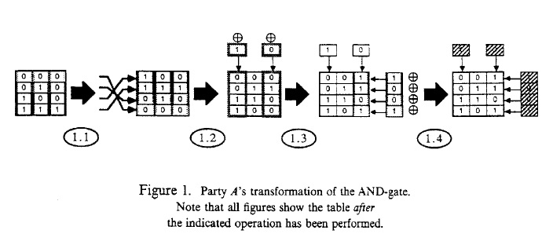
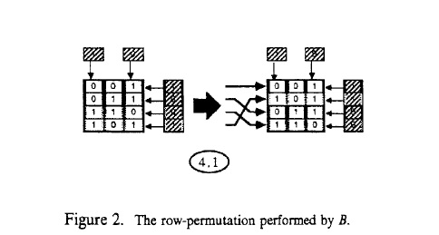
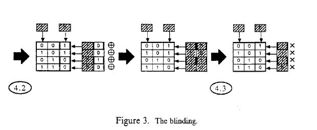
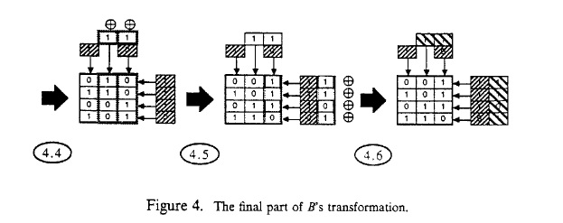
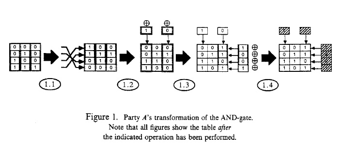
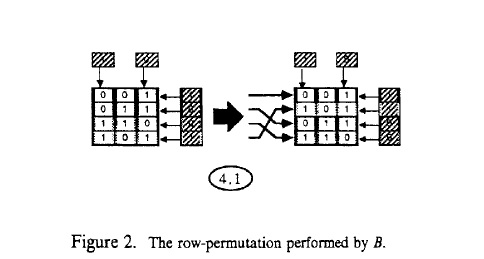
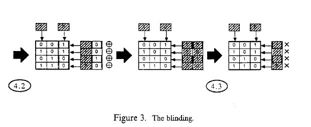
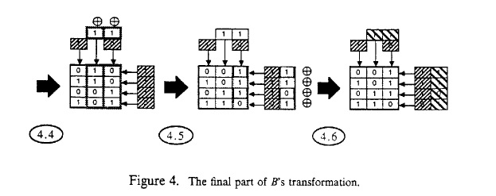

Multiparty Computation

Overview
Introduction
Multiparty Computation Ensuring Privacy of Each Party's Input and Correctness of the Result is a 1988 paper by Chaum, Damgård, and van de Graaf which presented the first example of a protocol offering information theoretic security, even if only to a single participant. Later that same year, Chaum and Damgåard (along with Claude Crépeau) would follow up this work with a feasibility result demonstrating that it was possible to offer information theoretic security to all participants (under certain assumptions). While this paper is important in its own right, the results of that following paper had a much larger effect on multiparty computation research as a whole.
The protocol presented offers a different perspective to computation than the papers before it. It is in some ways similar to Yao's garbled circuit construction, but offers very different characteristics (e.g. the information theoretic security of one party) and operates in an \(n\) party case as opposed to the 2 party case.
Goals and Results
The authors were largely attempting to offer a more efficient and usable construction for multiparty computation. In this, historically, they failed; this protocol is of comparable efficiency to most other constructions already known at the time, except perhaps for very small circuits. They did succeed in making a protocol that was immensely extensible and private, much more so than a garbled circuit or the GMW construction. This protocol easily tolerates multiple outputs, allows for optimal fairness, and can be composed with other runs of the protocol. Its main drawback is that it requires significant (and inherently obsolescent) alterations in order to become fault tolerant to any degree.
As a mostly unrelated aside, this paper interestingly shows that any language for which membership can be proven interactively can also be proven in zero knowledge (under the assumption that clawfree trapdoor permutations exist).
Assumptions
Minimally, this paper operates under the assumption that clawfree trapdoor permutations exist, as this assumption implies the existence of bit commitment schemes. (Note that this is not necessarily the minimal assumption implying the existence of bit commitment schemes, but it is the minimal assumption proving the existence of bit commitment schemes with the properties used in this paper.)
For one of the bit commitment schemes mentioned as an example, the following assumption must be held additionally:
Quadratic Residuosity AssumptionGiven any element \(y\in\mathbb Z_N\), where \(N=p\cdot q\) for primes \(p\equiv q\equiv 3\bmod4\), there does not exist a probabilistic polynomial-time method of determining whether \(\exists\,x\in\mathbb Z_N\) such that \(x^2\equiv y\pmod N\).
The quadratic residuosity assumption is known to imply that factoring is hard[?]; in turn, the hardness of factoring is known to imply that clawfree permutations exist[?]. As such, we can make either assumption, as opposed to needing both in the case that we want to use the QRS commitment scheme.
In terms of what network this protocol requires, synchrony is assumed. While not declared outright, a broadcast channel is implicitly assumed based on the definition of rounds and messages presented in Section 4.
Definitions
Definition 4.1We define \(OP^{X}\) to be a probability distribution on outputs when running \(X\), where \(X\) could be \(C\) (a particular circuit definition) or \(prot\) (a multiparty protocol meant to emulate \(C\)).
A protocol is said to be correct if for any choice of inputs \(I=\)\((ip_1,\dots,ip_n)\), and any binary string \(op\) and constant \(c,\) $$\left|OP_I^C(op)-OP_{I,m}^{prot}(op)\right|\lt m^{-c}$$ for all sufficiently large \(m\).
Definition 4.2The protocol is said to be secure against the conspiracy \(X\) if there exists a simulator for \(X\), \(M_X\), such that for any \((ip_1,\dots,ip_n)\) and \(ra\), the two ensembles of probability distributions $$\left\{P_{M_X}^{(m)}\left(f_C(ip_1,\dots,ip_n,ra), \left\{ip_i,\,\middle|\,P_i\in X\right\}\right)\right\}_{m=1}^\infty$$ and $$\left\{P_{prot}^{(m)}(ip_1,\dots,ip_n,ra)\right\}_{m=1}^\infty $$ are polynomially (in \(m\)) indistinguishable.
Definition 5.1A computation \(\Gamma\) in \(C\) consists of a selection of exactly one row in each truth table. The input of \(\Gamma\) is the corresponding assignment of bits to the input wires of \(C\), the output of \(\Gamma\) is the corresponding assignment of bits to the output wires.
Definition 5.2Let \(g\) be a gate in \(C\) with \(t\) input wires. For \(i=1\cdots n\), we define an \(i\)-transform \(T\) of \(T(G)\) to be a \((t+1)\) by \(2^t\), 0-1 matrix with a list of bit commitments attached to each row and each column. The list attached to row \(l\) is called \(rlist(l,T)\). The list attached to column \(k\) is called \(clist(k,T)\).
Each list contains one commitment from each participant \(P_j\), for which \(j\leq i\), except \(clist(k,T)\), when the \(k\)-th column corresponds to an input wire in some \(I_j\). These lists are empty if \(j\gt i\), and contain one bit commitment from \(P_j\) if \(j\leq i\).
By \(rsum(l,T)\) (resp. \(csum(k,T)\)), we denote the XOR sum of all bits commited to in \(rlist(l,T)\) (resp. \(clist(k,T)\)). The sum of an empty list is defined to be 0.
A 0-transform of \(T(G)\) is defined to be simply \(T(G)\) itself.
Definition 5.3Where \(1\leq l\leq2^t,\,1\leq k\leq t+1\).
A valid \(i\)-transform \(T\) of \(T(G)\) is an \(i\)-transform of \(T(G)\) which satisfies that:
There exists a permutation \(\sigma\) of \((1,\dots,2^t)\) such that: $$\begin{split} T_{lk}&=T(G)_{\sigma(l)k}\oplus csum(k,T),\quad\,&\mbox{if}\;k\lt t+1,\\ T_{lk}&=T(G)_{\sigma(l)k}\oplus csum(k,T)\oplus rsum(l,T),\quad &\mbox{if}\;k= t+1, \end{split} $$ where \(T_{lk}\) (resp. \(T(G)_{lk}\)) is the entry in the \(l\)-th row and \(k\)-th column of \(T\) (resp. \(T(G)\)).
Definition 6.1By a computation \(\Gamma^*\) in \(C^*\), we mean a selection of exactly one row in each \(n\)-transform in \(C^*\).
A computation \(\Gamma^*\) is said to be consistent, if the following is satisfied: Suppose output column \(k_1\) in the transform \(T^*_1\) is connected with column \(k_2\) in the transform \(T_2^*\), and let \(\Gamma^*(k_1)\) and \(\Gamma^*(k_2)\) be the entries selected by \(\Gamma^*\) in the two columns then $$\Gamma^*(k_1)\oplus rsum(l_1,T_1)\;=\;\Gamma^*(k_2),$$ where \(l_1\) is the index of the row selected by \(\Gamma^*\) in \(T_1^*\).
Theorems
We define 'the protocol' to be the multiparty computation protocol consisting of procedures Transform Circuit, Check Transformation, and Construct Computation.
Theorem 6.1For every \(i=1\cdots n\), the probability that \(P_i\) has cheated (i.e. sent incorrect messages) anywhere in the protocol is smaller than \(m^{-c}\) for any constant \(c\) and all sufficiently large \(m\). If no cheating occurs, then the encryption phase ends with \(P_n\) outputting a valid \(n\)-transform of every truth table in \(C\).
Lemma 6.2Let \(\Gamma^*\) be a computation in \(C^*\) and suppose all transforms in \(C^*\) are valid. Then the corresponding computation \(\Gamma\) in \(C\) is consistent if and only if \(\Gamma^*\) is consistent.
Theorem 6.3The protocol is correct, as defined in definition 4.1.
Theorem 6.4The protocol is secure.
Theorem 6.5.If \(P_n\) is honest and uses DLS for bit commitments, then the protocol releases no information in the Shannon sense about the private input of \(P_n\) and all intermediate results in the computation.
Theorem 8.1Assume that pairs of clawfree trapdoor functions exist. Then any language in IP has a zero knowledge proof system.
Protocols
The Encryption Phase
- Number of parties: Any \(n\) parties
- Function(s): Takes in the description of a circuit \(C\) that the \(n\) parties wish to collectively determine. We define the circuit to have \(c\) gates with maximum \(t\) fan-in, and each party has an equal number of input bits (plus an also-equal set of random input bits). The parties collectively create a new, encrypted version of the circuit.
- Privacy constraints: No party learns the input bits of any other party.
- Cheating: No party can incorrectly create the circuit without being caught, except negligibly often.
- Subprotocols: Procedure Transform Circuit is done once per party. Procedure Check Transform is done \(m\) times per party, where \(m\) is the security parameter.
- Bits exchanged: \(\operatorname{O}(cmn2^t(t+m+n))\), where \(m\) is the security parameter, \(n\) is the number of parties, \(c\) is the number of gates in the circuit, and \(t\) is the maximum fan-in of those gates.
- Runtime: \(\operatorname{O}(cm2^t(t+n^2))\), where \(m\) is the security parameter, \(n\) is the number of parties, \(c\) is the number of gates in the circuit, and \(t\) is the maximum fan-in of those gates.
- Assumptions: A broadcast channel was implicitly defined in Section 4. Due to this, both bits exchanged and runtime are slightly simplified (in particular by not using Byzantine agreement, and by dividing bits exchanged by \(n\)).
Procedure Transform Circuit
- Number of parties: Performed by 1 party at a time, with the result being sent to all \(n\) parties after completion.
- Function(s): Takes in the description of a circuit \(C\) that the \(n\) parties wish to collectively determine. We define the circuit to have \(c\) gates with maximum \(t\) fan-in, and each party has an equal number of input bits (plus an also-equal set of random input bits). The party performing the procedure encrypts the circuit in a special, composable way.
- Privacy constraints: No party learns the performing party's input bits or in what way the performing party changed the circuit.
- Cheating: Cheating is dealt with by procedure Check Transform, which is done as part of the overall Encryption Phase (above).
- Bits exchanged: \(\operatorname{O}(c2^t(t+m))\), where \(m\) is the security parameter, \(c\) is the number of gates in the circuit, and \(t\) is the maximum fan-in of those gates.
- Runtime: \(\operatorname{O}(c2^t(\frac t n + i))\), where \(n\) is the number of parties, \(c\) is the number of gates in the circuit, \(t\) is the maximum fan-in of those gates, and \(i\) is which iteration of this protocol is being run (e.g. the first participant has \(i=1\), the final one has \(i=n\)).
- Assumptions: A broadcast channel was implicitly defined in Section 4. Due to this, both bits exchanged and runtime are slightly simplified (in particular by not needing Byzantine agreement, and by dividing bits exchanged by \(n\)).
- Notes: We are operating under the simplifying assumption that each party has a \(\frac 1 n\) probability of using one of their input bits as any given input bit to a gate. We additionally assume that the bit commitments (and their openings) are each \(m\) bits.
Procedure Check Transform
- Number of parties: Performed by 1 prover and \(n-1\) verifiers.
- Function(s): The prover proves to all the verifiers (in zero knowledge) that the prover performed the above Transform Circuit protocol correctly.
- Privacy constraints: No party learns how the prover transformed the circuit originally.
- Cheating: After one run of this procedure, the verifiers know with probability ½ that the prover performed the above protocol correctly. After \(m\) runs, this probability is \(1-2^{-m}\).
- Subprotocols: A single (additional) run of the Transform Circuit protocol is performed for each run of this proof.
- Bits exchanged: \(\operatorname{O}(c2^t(t+m+i))\), where \(m\) is the security parameter, \(c\) is the number of gates in the circuit, \(t\) is the maximum fan-in of those gates, and \(i\) is which iteration of the Transform Circuit protocol is being checked (e.g. the first participant has \(i=1\), the final one has \(i=n\)).
- Runtime: \(\operatorname{O}(c2^t(\frac t n + i))\), where \(n\) is the number of parties, \(c\) is the number of gates in the circuit, \(t\) is the maximum fan-in of those gates, and \(i\) is which iteration of the Transform Circuit protocol is being checked (e.g. the first participant has \(i=1\), the final one has \(i=n\)).
- Assumptions: A broadcast channel was implicitly defined in Section 4. Due to this, both bits exchanged and runtime are slightly simplified (in particular by not needing Byzantine agreement, and by dividing bits exchanged by \(n\)).
The Computation Phase (i.e. Procedure Construct Computation)
- Number of parties: Any \(n\) parties
- Function(s): Takes in the encrypted version of a circuit created by the Encryption Phase above. Output is identical to the output of the circuit input to the Encryption Phase.
- Privacy constraints: No party learns the input bits of any other party.
- Cheating: No party can alter the output of the circuit without claiming a commitment has a different value than intended.
- Bits exchanged: \(\operatorname{O}(cmn)\), where \(m\) is the security parameter, \(n\) is the number of parties, and \(c\) is the number of gates in the circuit.
- Runtime: \(\operatorname{O}(cmn)\), where \(m\) is the security parameter, \(n\) is the number of parties, and \(c\) is the number of gates in the circuit.
- Assumptions: A broadcast channel was implicitly defined in Section 4. Due to this, both bits exchanged and runtime are slightly simplified (in particular by not using Byzantine agreement, and by dividing bits exchanged by \(n\)).
Further Reading
This paper had a sequel later the same year which is essentially required reading in order to see how the ideas presented here developed: it can be found here.
For the foundations of the circuit building construction presented here, see Yao's 1986 paper that analyzed the two party case.
Referencing This Paper
To cite this paper, simply copy and paste the below into your citation:
D. Chaum, I. Damgård, and J. van de Graaf. Multiparty Computation Ensuring Privacy of Each Party's Input and Correctness of the Result. Advances in Cryptology—CRYPTO '87 Proceedings, pages 87-119. Springer. 1987.
Annotated Paper
Summary
A protocol is presented that allows a set of parties to collectively perform any agreed computation, where every party is able to choose secret inputs and verify that the resulting output is correct, and where all secret inputs are optimally protected.
The protocol has the following properties:
- One participant is allowed to hide his or her secrets unconditionally, i.e. the protocol releases no Shannon information about these secrets. This means that a participant with bounded resources can perform computations securely with a participant who may have unlimited computing power. To the best of our knowledge, our protocol is the first of its kind to provide this possibility.
- The cost of our protocol is linear in the number of gates in a circuit performing the computation, and in the number of participants. We believe it is conceptually simpler and more efficient than other protocols solving related problems[?][?][?]. It therefore leads to practical solutions on problems involving small circuits.
The above (being linear in the number of gates and in the number of participants) is inaccurate; it is actually quadratic in the number of participants, because the procedure Transform Circuit has an \(i\) term in it, where \(i\) is the number of participants who have participated so far, which of course sums to \(\frac{n(n-1)}2\).
- The protocol is openly verifiable, i.e. any number of people can later come in and rechallenge any participant to verify that no cheating has occurred.
- The protocol is optimally secure against conspiracies: even if \(n-1\) out of the \(n\) participants collude, they will not find out more about the remaining participants' secrets than what they could already infer from their own input and the public output.
- Each participant has a chance of undetected cheating that is only exponentially small in the amount of time and space needed for the protocol.
- The protocol adapts easily, and with negligible extra cost, to various additional requirements, e.g. making part of the output private to some participant, ensuring that the participants learn the output simultaneously, etc.
- Participants can prove relations between data used in different instances of the protocol, even if those instances involve different groups of participants. For example, it can be proved that the output of one computation was used as input to another, without revealing more about this data.
- The protocol can be used as an essential tool in proving that all languages in IP have zero knowledge proof systems, i.e. any statement which can be proved interactively can also be proved in zero knowledge.
The rest of this paper is organized as follows: First we survey some related results. Then Section 2 gives an intuitive introduction to the protocol. In Section 3, we present one of the main tools used in this paper: bit commitment schemes. Sections 4 and 5 contain the notation, terminology, etc. used in the paper. In Section 6, the protocol is presented, along with proofs of its security and correctness. In Section 7, we show how to adapt the protocol to various extra requirements and discuss some generalizations and optimizations. Finally, Section 8 contains some remarks on how to construct zero knowledge proof systems for any language in IP.
1. Related Work
The problem of multiparty secure computations is an important one. When stated in its most general form, its solution implies a solution—at least a theoretical one—to almost any protocol construction problem. The first to consider this problem was Yao[?]. He devised protocols that, under various cryptographic assumptions, could keep the inputs secret while allowing each participant only a negligible chance of cheating. He did not, however, address the problem of "fairness", i.e. ensuring that the participants learn the output simultaneously. Later, Yao[?] solved also this problem for the two-party case. Recently, in work done independently from (but earlier than) ours, Goldreich, Micali, and Wigderson[?] used Yao's two-party construction to devise a multiparty solution, based on the existence of a trapdoor one-way function. This protocol implements a multiparty simulation of the computation in a circuit. Each participant holds a share of each bit in the real computation, and these shares are manipulated by using Yao's two-party construction \(O(n^2)\) times, where \(n\) is the number of participants. In other work done independently from and almost simultaneously with ours, Galil, Haber, and Yung generalize all the properties of Yao's construction to the multiparty case, and simplify the use of Yao's protocol in the multiparty simulation. Also, they give a concrete construction based on Diffie-Hellman key exchange rather than the existence of a trapdoor one way function. Very recently, Goldreich and Vainish[?] found another simplification by designing a special purpose two-party protocol which could replace Yao's protocol in the multiparty construction.
Indeed, Yao's original two-party construction was very distinctly unfair: one party was guaranteed to learn the output before the other party, and could easily make the other party believe anything.
In comparison, our protocol solves the multiparty case using a totally different concept. It attacks the problem "directly", without using Yao's two-party protocol, and without using reductions to 3-colorability or to SAT[?][?] to prove the validity of messages. We rely on a stronger cryptographic assumption than [?], namely the Quadratic Residuosity Assumption[?]. This, however, allows a simpler and more efficient construction, capable of implementing all the "primitives for cryptographic computations", defined in [?]. Although our protocol could also be based only on the existence of a trapdoor one-way function, this would reduce the efficiency considerably. Some of the techniques upon which our protocol is based were previously developed and used in the work of Chaum[?] and Brassard and Crépeau[?]. By specializing to the case where only one participant supplies the inputs, our protocol can provide slightly more efficient solutions to the problems solved there.
An interesting consequence of our work is that any statement which can be proved interactively, can also be proved in zero knowledge, provided that our cryptographic assumption holds (one assumption which will do in this case is the existence of clawfree trapdoor functions). More formally: any language in IP has a zero knowledge proof system. This result was already proved for protocols with a constant number of rounds in , where a proof of the result in full generality is attributed to Ben-Or. As far as we know, this last proof is still unpublished, so we cannot comment on possible differences between this proof and ours.
2. Overview of the Constructions
For the intuitive sketch given in this section, we will make some simplifications. We will consider only two parties, \(A\) and \(B\) and we will do a computation on one AND-gate only. At the end of the section we will see how this method can be generalised to more parties, and to a computation consisting of many gates.
Note that this AND-gate computation, where both parties want to hide their input from each other, has a meaningful application: consider the situation where Alice and Bob have just met, and each considers dating the other. Neither wishes to lose face in the following sense: if Alice wants a date but Bob doesn't, Alice does not want to let Bob know that she wanted the date. And the same holds for Bob. In other words: if a party does not want the date, they do not find out the other party's decision.
We have our own version of this in the \(m\)-party case called the fourth grader problem.
Note that sometimes a party can derive the other's input just by combining his or her own input with the output of the joint computation. This can never be avoided, however.
The AND-gate is represented by a truth-table \(T\). We will show what transformations \(A\) and \(B\) have to apply to \(T\) in order to compute the logical AND, such that
- both parties can be sure (with very high probability) that the transformations are done correctly;
- both parties can keep their input hidden from the other party; and
- both parties can be sure the result of the computation is correct.
The Protocol
- \(A\)(lice) applies a randomly chosen permutation, \(\sigma_j\), to the rows of \(T\).
- \(A\) chooses two bits \(b_1\) and \(b_3\), and uses these to compute the XOR of the \(k\)th column and \(b_k\). This procedure is known as inversion of columns.
- \(A\) chooses four bits \(d_1\cdots d_4\), and computes the XOR of the \(l\)th entry in the last column and \(d_l\). This procedure is known as encryption the output column.
- \(A\) encrypts \(b_1,b_3,d_1\cdots d_4\) in such a way that she cannot disavow these values later, while \(B\)(ob) cannot see what the values are without \(A\)'s help. This is known as committing to the bits.
We will indicate the final result of these steps with \(\hat{T}\). \(B\) will verify whether \(\hat{T}\) was constructed correctly in the next steps:
- \(A\) creates a transformed truthtable \(T'\) in exactly the same way as she created \(\hat{T}\).
That is to say, using the same method/instructions, not using the same values or the same permutation.

-
\(B\) flips a coin.
- If the coin came out heads, \(A\) must reveal exactly how she constructed \(T'\), so that \(B\) can verify that this was done correctly.
- If the coin came out tails, \(A\) must show a special relation between \(\hat{T}\) and \(T'\). Details on this can be found in Section 6.1. Here, it suffices to know that if the relation holds, it implies that \(\hat{T}\) was correctly constructed if and only if \(T'\) was.
After \(m\) repetitions of steps 2 and 3, \(B\) is convinced with very high probability that \(A\) constructed \(\hat{T}\) correctly. Now \(B\) will do to \(\hat{T}\) what \(A\) did to \(T\), and even more:
-
-
\(B\) permutes the rows of \(\hat{T}\), together with the commitments of the output column entries.

- \(B\) flips a coin for each output column entry and applies the XOR.
-
\(B\) computes, using \(A\)'s bit commitment scheme, a commitment containing the XOR of his own bit and the one chosen and committed to by \(A\) for this output column entry. Although \(A\) can later open the resulting commitment, she will have no idea which of her original commitments it was computed from. This requires special properties of the commitment scheme used.

This blinding is necessary to hide \(B\)'s permutation. \(B\) also has to do a transformation corresponding exactly to the one of \(A\):
-
- \(B\) chooses bits for inversion of his own input column, and for the output column.
- \(B\) chooses bits for inversion of each output column entry
- \(B\) commits to the bits chosen in steps 4.4 and 4.5. He then sends his final result, \(T^*\), to \(A\).

- In the same way as in steps 2 and 3, \(B\) convinces \(A\) that \(T^*\) was constructed correctly.
Now \(A\) and \(B\) have together constructed a double-blinded version \(T^*\) of the gate that satisfies the conditions listed before step 1. They will use \(T^*\) in performing the computation as follows:
- Together they select the correct row of \(T^*\) by announcing their choice of input bits for \(T^*\). These input bits are the XOR sum of the "real" input bits, and the inversion bits for the corresponding columns.
- \(A\) and \(B\) both reveal the inversion bit for the output column, and the inversion bit for the entry in the output column which is in the selected row. By XORing this output column entry with the revealed inversion bits, they can both compute the bit that is the result of the computation.
This basic protocol can be generalized in several ways:
- Instead of using an AND-gate, any type of gate can be used.
- Instead of two parties, any number of parties can participate in the protocol. Each new party just has to follow \(B\)'s part of the protocol, and will thus have to blind the commitments of each participant who went before.
This does, of course, cause exponential blow-up with the number of parties, since we are building a truth table.
- Instead of using only one gate, a computation involving arbitrarily many gates can be done with the protocol. The only condition is that when gate \(T_1\) is connected to \(T_2\), then their corresponding output column and input column were inverted using the same bits. When later a row is selected in the encrypted version of \(T_1\), the inversion bits that apply to the single output column entry will be revealed, while the column inversion bits will remain secret. The revealed inversion bits are now XORed with the output column entry selected, and the result can be used directly as an input bit to the encryption version of \(T_2\).
3. Bit Commitment Schemes
A bit commitment scheme is a tool allowing protocol participant \(A\)(lice) to "commit" to a bit \(b\in\{0,1\}\) by releasing some information related to \(b\) such that:
- She cannot later convincingly claim that \(b\) had the opposite value.
- No other participant can find the value of \(b\) unless \(A\) allows this (opens the commitment)
More formally, a bit commitment scheme is a family of finite sets $$\{I_m\}_{m=1}^\infty$$ such that a member of \(I_m\) is a pair of functions $$(f_m^{(0)},f_m^{(1)}),$$ where $$f_m^{(0)}:\;R_m^{(0)}\;\;\rightarrow\;\;S_m\quad and\quad f_m^{(0)}:\;R_m^{(1)}\;\;\rightarrow\;\;S_m$$ where \(R_m^{(i)}\) and \(S_m\) are finite sets, and the function are polynomial (in \(m\)) time computable.
Notice that, by making \(f_m^{(0)}\) and \(f_m^{(1)}\) public, Alice is allowing any party to commit to bits under her scheme.
Further, there exists a probabilistic polynomial time algorithm \(\Omega\), which on input a value of the security parameter \(m\) outputs a member chosen randomly and uniformly from \(I_m\).
To use the commitment scheme, \(A\) will choose an instance, i.e. she will choose a value of \(m\), run \(\Omega\) and make \(m,\,f_m^{(0)}\) and \(f_m^{(1)}\) public.
To commit to a bit \(b,\,A\) chooses an element \(r\) uniformly in \(R_m^{(b)}\) and makes public $$\operatorname{BCS}_{A,m}(b,r)=f_m^{(b)}(r).$$
Below, we list the properties of bit commitment schemes that are of interest in our protocol:
Hiding the bit:
Let \(\Delta\) be any probabilistic polynomial time algorithm which takes as input a commitment \(\operatorname{BCS}_{A,m}(b,r)\) and gives a one bit output \(\Delta(\operatorname{BCS}_{A,m}(b,r))\). Then for all constants \(c\),$$\left|\operatorname{Pr}\Big(\Delta\left(\operatorname{BCS}_{A,m}(b,r)\right)=b\Big)-\frac 1 2\right|\lt m^{-c}$$ for all sufficiently large \(m\). This holds for all but a fraction \(\epsilon(m)\) of the instances in \(I_m\), and as a function of \(m,\,\epsilon(m)\) vanishes faster than any polynomial fraction.
Thus, guessing from a commitment which bit it contains is a hard problem. Note that \(b\) must be uniquely determined from \(\operatorname{BCS}_{A,m}(b,r)\) and \(r\), but not necessarily from \(\operatorname{BCS}_{A,m}(b,r)\) alone. This also means that \(b\) may be impossible to find from a commitment to \(b\), even with infinite computing power.
Unforgeability:
Let \(\Delta\) be a probabilistic polynomial time algorithm which takes as input a commitment \(\operatorname{BCS}_{A,m}(b,r),\,b\) and \(r\), and gives as output an element \(r_\Delta\) in \(R_m^{(b\oplus 1)}\). Then, for any constant \(c\), $$\operatorname{Pr}\Big(\operatorname{BCS}_{A,m}(b,r)=\operatorname{BCS}_{A,m}(b\oplus 1,r_\Delta)\Big)\lt m^{-c}$$ for all sufficiently large \(m\). Again this holds for all but a fraction \(\epsilon(m)\) of the instances in \(I_m\), and as a function of \(m,\,\epsilon(m)\) vanishes faster than any polynomial fraction.
Thus it is not possible for a polynomially bounded \(A\) to lie about the contents of her commitments. But note that an \(r_\Delta\) satisfying the condition above may not exist at all, in which case it is impossible to lie, even with infinite computing power.
Opening a commitment:
Given \(\operatorname{BCS}_{A,m}(b,r),\,A\) can convince anyone that, for a given value of \(n\), she knows an \(r\) which will produce the given commitment. Typically, she will just reveal \(r\).
Comparability:
Given two commitments, \(\operatorname{BCS}_{A,m}(b,r)\) and \(\operatorname{BCS}_{A,m}(b',r')\), there exists a Minimum Knowledge Interactive Proof (MKIP) by which \(A\) can convince anyone about the value of \(b\oplus b'\).
Blinding:
Given a commitment \(\operatorname{BCS}_{A,m}(b,r)\), another participant, \(B\), can choose \(b'\in\{0,1\}\) and compute from this a blinded commitment \(\operatorname{BCS}_{A,m}(b\oplus b',r')\), where \(r'\) is uniformly distributed in \(R_m^{(b\oplus b')}\). There exists a MKIP such that, given these two commitments, \(B\) can convince anyone about the value of \(b'\).
Moreover, we require that given two commitments \(\operatorname{BCS}_{A,m}(b\oplus b',r')\) and \(\operatorname{BCS}_{A,m}(b\oplus b'',r'')\), which have been computed by \(B\) as above, there exists a MKIP by which B can convince anyone about the value of \((b\oplus b')\oplus(b\oplus b'')=b'\oplus b''\).
Finally, it must be possible for \(A\) to open commitments which have been blinded as above, just as if she had computed them herself.
From a theoretical point of view, the opening and comparability properties do not represent demanding assumptions, since the required proofs can always be produced by using standard reductions to 3Col or Sat[?][?][?]. We will only be concerned, however, with bit commitment schemes allowing the proofs to be produced directly and efficiently. As a consequence, the main protocol will be much more efficient.
3.1. Examples
The protocol presented in this paper relies on the existence of bit commitment schemes satisfying the properties defined above. In this subsection, we give three examples of commitment schemes which could be used in the protocol, namely the Quadratic Residuosity Scheme (QRS), the Jacobi Symbol Scheme (JSS), and the Discrete Log Scheme (DLS), of which DLS has not been used in published protocols before.
In QRS, \(A\)(lice) uses the algorithm \(\Omega\) to select at random two \(m\)-bit primes, \(p\) and \(q\) with \(p\equiv q\equiv -1\pmod 4\). She then puts \(N=pq,\,\)\(R_m^{(0)}\)\(=\)\(R_m^{(1)}\)\(=\mathbb Z_N^*\) and \(S_m\)\(=\Bigg\{x\in\mathbb Z_N^*\,\Bigg|\,\)\(\left(\frac x N\right)\)\(=1\Bigg\}\). She makes public \(N\) and uses for example the zero knowledge protocol from [?] to convince everyone that \(N\) is of the right form. In particular, this implies that -1 is a quadratic nonresidue modulo \(N\) of Jacobi symbol 1. If we define $$f_m^{(b)}(r)=(-1)^br^2\bmod N$$ it is easy to see that a commitment will contain a 1 if and only if the commitment is a quadratic nonresidue modulo \(N\).
In particular, \(N\) is a Blum integer and therefore has the mentioned property that -1 is a nonresidue but must have a Jacobi symbol of 1.
The "hiding" condition above now translates into the well known quadratic residuosity assumption: it is hard, even probabilistically, to distinguish quadratic residues from quadratic nonresidues modulo \(N\) (a formal statement can be found in [?]). Moreover, even with infinite computing power, clearly \(A\) cannot lie about the contents of a commitment.
The opening and comparability properties are easily verified for QRS: \(A\) simply makes public a square root modulo \(N\) of $$(-1)^b\operatorname{BCS}_{A,m}(b,r)\quad \left(\text{resp.}\quad(-1)^{b\oplus b'}\operatorname{BCS}_{A,m}(b,r)\operatorname{BCS}_{A,m}(b',r')^{-1}\right).$$ These proofs will be MKIPs because the commitments were chosen by \(A\) herself at random.
Blinding is also a simple process: having chosen \(b',\,B\)(ob) computes the new commitment as $$(-1)^{b'}s^2\operatorname{BCS}_{A,m}(b,r)=\operatorname{BCS}_{A,m}(b\oplus b',rs),$$ where \(s\) is randomly chosen from \(Z_n^*.\,B\) can show the value of \(b'\) by showing a square root of $$(-1)^{b'}\operatorname{BCS}_{A,m}(b\oplus b',rs)(\operatorname{BCS}_{A,m}(b,r))^{-1},$$ which equals \(s.\,s\) is called the blinding factor.
Also, given two blinded commitments as above, \(B\) can show a square root of $$(-1)^{b'\oplus b''}\operatorname{BCS}_{A,m}(b\oplus b',r')(\operatorname{BCS}_{A,m}(b\oplus b'',r''))^{-1}$$ to convince everyone about the value of \(b'\oplus b''\).
Clearly, \(A\) can open any commitment by using her knowledge of the factors of \(N\) to compute square roots. But it is important to note that it will only be safe for her to do so if she is convinced that she will always be opening blinded forms of commitments chosen by herself. This will be ensured by the construction of our main protocol.
Let's quickly specify an attack for if \(A\) opens a commitment that is not a blinded version of one of her own commitments. Let's say \(A\) has released the commitment \((-1)^br^2\bmod N\); \(B\) pretends to blind it with some identical bit and some value \(t^2\), making it \((-1)^b(-1)^b(rt)^2\equiv(rt)^2\pmod N\). Since \(\mathbb Z_N^*\) is a multiplicative ring, if \(B\) simply chooses an \(s\), there must exist some \(t\) such that \(rt=s\) and therefore such that \(s^2=(rt)^2\). \(B\) can therefore give \(A\) the commitment \(s^2\bmod N\) and, without further information, \(A\) cannot tell the difference between the fake commitment and a real one. If \(A\) opens the commitment, returning that a square root of \(s^2\) is \(x\), there is a 50% chance that \(x\not\equiv\pm s\pmod N\) since all quadratic residues have 4 square roots. $$\begin{align}x^2&\equiv s^2&\pmod N \\ x^2-s^2&\equiv0&\pmod N \\ (x-s)(x+s)&\equiv 0&\pmod N\end{align}$$ Since \((x-s)\not\equiv0\), we have factored \(N\).
In the JSS (first introduced by Blum[?]), some participant \(B\) chooses a modulus \(N\) of the same form as above, such that the factorization is unknown to \(A\), and convinces her as above that \(N\) was correctly chosen. We then put $$\begin{align}R_m^{(0)}\;&=\;\left\{x\in\mathbb Z_N^*\,\middle|\,\left(\frac x N\right)=1\right\},\\ R_m^{(1)}\;&=\;\left\{x\in\mathbb Z_N^*\,\middle|\,\left(\frac x N\right)=-1\right\},\end{align}\\ \text{and}\quad S_m\;=\;QR(N),$$ where \(QR(N)\) denotes the set of quadratic residues modulo \(N\). Finally, we set $$f_m^{(b)}(r)\;=\;r^2\bmod N,$$ where \(r\in R_m^{(b)}\).
This scheme hides the bits unconditionally: since each square modulo \(N\) has two square roots of Jacobi symbol +1 and two of Jacobi symbol -1, release by \(A\) of \(\operatorname{BCS}_{A,m}(b,r)\) gives away no Shannon information about \(b\). On the other hand, the unforgeability property only holds conditionally here: if \(A\) could factor \(N\), she could lie about the value of \(b\).
JSS also satisfies the comparability property: Given two commitments \(s_1\,=\,\operatorname{BCS}_{A,m}(b,r)\) and \(s_2\,=\,\operatorname{BCS}_{A,m}(b',r'),\,A\) can make public a square root of \(s_1(s_2)^{-1}\) of Jacobi symbol \((-1)^{b\oplus b'}\) to convince everybody about the value of \(b\oplus b'\). Note that this is still information theoretically secure: after having seen a proof that \(b\oplus b'\,=\,1\), say, the two possibilities \((b,b')\,=\,(1,0)\) and \((b,b')\,=\,(0,1)\) remain equally likely, even to someone who knows the factorization of \(N\).
Note that if \(A\) is going to commit to bits using JSS in a multiparty protocol, every participant except \(A\) must supply a different modulus, and when committing to a bit, \(A\) must make public a set of commitments to this bit, one for each modulus supplied. This is to prevent the possibility that \(A\) breaks the unforgeability property by conspiring with somebody who knows the factorizations. This of course means that the other participants must be convinced that the same bit is contained in all commitments in a given set. Fortunately, the construction of our main protocol is such that this automatically ensured whenever JSS is used.
Note also that if absolute certainty is needed about the correctness of the choice of \(N,\,B\) could be required to simply reveal the factorization of \(N\) after the protocol has been executed. It would be too late for \(A\) by then to use this knowledge in the protocol. Another possibility is for \(B\) to prove to \(A\) in zero knowledge that the modulus has the right form. However, all the known proofs of this leave an exponentially small probability that \(B\)'s claim is false, in which case \(A\) would be giving away information about her secrets. Thus it seems that with this scheme, \(A\) will never be quite sure that her secrets have not been betrayed until after it happened!
The next example, the Discrete Log Scheme, solves this problem. Here, \(B\) chooses an \(m\)-bit prime \(p\), a generator \(g\) of \(\mathbb Z_p^*\), and an element \(a\in\mathbb Z_p^*\) at random and reveals them to \(A\). We now put \(R_m^{(1)}\,=\,R_m^{(0)}\,=\,S_m\,=\,\mathbb Z_p^*\), and $$f_m^{(b)}(r)\,=\,a^bg^r.$$
This scheme also hides the bits unconditionally, since the bit contained in a commitment is not uniquely determined, if the random choice made by \(A\) is unknown. Note that if \(p\) is determined such that the factorization of \(p-1\) is known, \(A\) can easily check for herself that \(p\) is a prime and that \(g\) is a generator.
To open a commitment, \(A\) must show the discrete log base \(g\) of $$a^{-b}\operatorname{BCS}_{A,m}(b,r),$$ namely \(r\). It is also easy to see that the unforgeability property holds, assuming that \(A\) cannot find the discrete log of \(a\).
Given two commitments \(\operatorname{BCS}_{A,m}(b,r)\) and \(\operatorname{BCS}_{A,m}(b',r'),\,A\) can prove that \(b\oplus b'=0\) by showing the discrete log of $$\operatorname{BCS}_{A,m}(b,r)(\operatorname{BCS}_{A,m}(b',r'))^{-1}$$ and to show that \(b\oplus b'=1\), she shows the discrete log of $$a^{-1}\operatorname{BCS}_{A,m}(b,r)\operatorname{BCS}_{A,m}(b',r').$$ Once again, it is easy to see that \(A\) cannot make a false claim about \(b\oplus b'\) unless she can find the discrete log of \(a\).
An additional advantage of DLS compared to JSS is that it is not necessary in a multiparty application that all participants different from \(A\) choose their own instances, and that \(A\) then must commit to a bit "in parallel" using all the published instances. Since there is no trapdoor present in DLS, all participants can collaborate in choosing \(p,\,g\) and \(a\) using some multiparty coinflipping protocol.
4. Protocols: notation and definitions
We think of a protocol as occurring among a set of communicating probabilistic Turing machines \(\{P_1,\dots,P_n\}\) called the participants. The protocol is described as a specification of the program each participant should follow.
Each machine has private input, output, and random tapes, and one communication tape. The contents of the input tape of \(P_i\) is called \(ip_i\), the contents of the output tape after execution of the protocol is called \(op_i\). All machines are clocked by a common clock, and the protocol proceeds in rounds. In each round, exactly one machine can do some computation and perhaps write a message on the other machines' communication tapes. By definition, all messages sent in the protocol are written simultaneously on all communication tapes. If a machine receives a message which does not obey the constraints specified in the protocol, it stops immediately, and we say that cheating has been detected.
The above implicitly defines a broadcast channel: that is, all communication tapes are written to with identical messages simultaneously, which is equivalent to every machine being able to write to a single channel that all parties can read. This is not terribly important in terms of the results of the paper, it simply makes exposition simpler.
We assume the existence of a mutually trusted source of random bits. Such a source could easily be implemented using e.g. Blum's coin flipping problem[?]. But since the construction of such a subprotocol is independent of our main protocol, we have chosen to abstract away the fact that a subprotocol is used.
The protocol takes some global input, known to all machines:
- A specification of the computation to be performed, in the form of a boolean circuit \(C\).
- The cryptographic security parameter \(m\).
Note that the security and the certainty of correctness may be varied independently of the complexity of the computation modelled by \(C\). Moreover, the protocol never uses any special properties of \(C\), such as membership of a polynomial size family. For these reasons, we look at \(C\) just as a single fixed circuit.
Of course, this does not mean that the behavior of e.g. the running time of the protocol as a function of \(C\) is not interesting, only that such dependencies should be considered independently of the security level.
4.1. Correctness and Security
The definitions in this section are straightforward generalizations of the definition of "zero knowledge proof systems" found in [?]. This becomes clear if one takes a slightly different point of view of the situation where a prover convinces a verifier about the membership of a string \(x\) in an NP-language \(L\).
In fact the prover and the verifier are doing an interactive computation, where only the prover supplies input, namely a certificate of membership for \(x\). The notion of correctness of the protocol they execute corresponds to the fact that we have a proof system: we want the protocol to produce the correct output of the computation, namely "accept" if indeed the prover put in a valid certificate of membership for \(x\). The notion of security corresponds to the fact that the proof system is zero knowledge: we want the verifier to gain nothing useful about the secrets of the prover, other than the fact that \(x\) is in \(L\).
If we model the computation needed to verify membership for \(x\) by a boolean circuit \(C\), it is clear that this is just a special case of the general problem addressed in this paper.
We allow \(C\) to be a probabilistic circuit, i.e. take as input a number of bits chosen uniformly from \(\{0,1\}\). Thus, given as inputs \(I=\)\((ip_1,\dots,ip_n)\)\(,\,C\) determines a probability distribution \(OP_I^C\) on the output. We assume for simplicity that the output is public, i.e. the same output string will appear on the output tape of any participant following the protocol (the generalization to different (private) outputs is easy and will be discussed later). Given a choice of inputs as above, we let \(OP_{I,m}^{prot}\) denote the probability distribution according to which the output string of a participant following the protocol is distributed, when the protocol is executed with security parameter value \(m\) and no cheating is detected. We would like this distribution to be essentially equal to \(OP_I^C\). In other words, the only way for (a set of) dishonest participant(s) to prevent the correct result from being computed is to stop the protocol, e.g. by deliberately sending an incorrect message.
We let \(OP_I^C(op)\) (resp. \(OP_{I,m}^{prot}(op)\)) denote the probability that the binary string \(op\) is produced as output.
Definition 4.1
A protocol is said to be correct if for any choice of inputs \(I=\)\((ip_1,\dots,ip_n)\), and any binary string \(op\) and constant \(c,\) $$|OP_I^C(op)-OP_{I,m}^{prot}(op)|\lt m^{-c}$$ for all sufficiently large \(m\).
A conspiracy is a subset \(X\) of \(\{P_1,\dots,P_n\}\) with \(|X|\lt n\). The machines in a conspiracy may follow any (polynomial time) program, and they may establish private communication channels to share all the information available to them.
Intuitively, we will consider the protocol secure if no conspiracy will learn more from the protocol than what could already have been inferred from the output of the computation and the part of the input known to the conspiracy.
To state this more formally, we need some definitions:
The binary string which is that concatenation of all messages sent during an execution of the protocol is called a protocol conversation.
Let \(ra\) be a binary string containing as many bits as there are random input bits to \(C\). Then by \(f_C(ip_1,\dots,ip_n,ra)\) we denote the output of \(C\) resulting from inputs \((ip_1,\dots,ip_n)\) and random choice \(ra\).
We let \(P_{prot}^{(m)} (ip_1,\dots,ip_n,ra)\) denote the probability distribution according to which a protocol conversation with security parameter \(m\) and inputs \((\)\(ip_1,\dots,ip_n\)\(,\)\(ra\)\()\) is distributed.
Note that this distribution is conditional on the program followed by the machines in \(X\), i.e. the conspiracy's strategy. Note also that the definition talks about the inputs of machines in \(X\). This is not necessarily a meaningful concept: nothing prevents a dishonest participant from pretending that the contents of its input tape are different from what they are in fact. This "problem" is easily solved, however, if we jump ahead in the protocol description a little: each participant must publish bit commitments which determine a particular choice of input. We therefore define the input of a participant to be the bit string committed to during the execution of the protocol.
A simulator for \(X\) is a polynomial time Turing machine \(M_X\) which, on input \(\left(m, f_C(ip_1,\dots,ip_n,ra), \left\{ip_i,\,\middle|\,P_i\in X\right\}\right)\) will generate a protocol conversation distributed according to the distribution \(P_{M_X}^{(m)}\left(f_C(ip_1,\dots,ip_n,ra), \left\{ip_i,\,\middle|\,P_i\in X\right\}\right)\).
Definition 4.2
The protocol is said to be secure against the conspiracy \(X\) if there exists a simulator for \(X\), \(M_X\), such that for any \((ip_1,\dots,ip_n)\) and \(ra\), the two ensembles of probability distributions $$\left\{P_{M_X}^{(m)}\left(f_C(ip_1,\dots,ip_n,ra), \left\{ip_i,\,\middle|\,P_i\in X\right\}\right)\right\}_{m=1}^\infty$$ and $$\left\{P_{prot}^{(m)}(ip_1,\dots,ip_n,ra)\right\}_{m=1}^\infty $$ are polynomially (in \(m\)) indistinguishable.
We assume that the reader is familiar with this notion. For details, refer to [?].
There is also soon to be a tutorial on proof of zero-knowledge through simulation.
The protocol is said to be secure if it is secure against any conspiracy.
This definition means that no matter which type of hostile behavior is exhibited by \(X\), the private inputs of all honest participants and the random inputs are optimally protected. But note that providing the protocol secure under this definition does not exclude the possibility that a conspiracy, by stopping the protocol in some clever way, could find out about the output, while preventing honest participants from getting at it. The basic protocol as described in Section 5 already offers protection against this, but a lot of variations on the theme are possible. More details will be given in Section 6.
This concept of a conspiracy learning the output while stopping the other parties from learning the output is known in the literature as fairness.
5. Circuits, terminology, and notation
We think of a boolean circuit \(C\) in the usual way, as an acyclic directed graph where the nodes are called gates and the edges are called wires.
A wire may be connected only into a gate, in which case it is called an input wire. If it leaves a gate without connecting it into another, we call it an output wire.
The input wires are partitioned into \(n+1\) disjoint subsets, \(I_1,\dots,I_n,R\). \(I_j\) corresponds to the secret input chosen by \(P_j\), such that \(ip_j\) contains one bit for each wire in \(I_j\). In a similar way, \(R\) corresponds to the random inputs to \(C\).
For each gate, a function is specified that maps the input bits to a one bit output. For the gate \(G\), this function is given by the truth table \(T(G).\,T(G)\) is a 0-1 matrix with \(t+1\) columns and \(2^t\) rows, where \(t\) is the number of wires connecting into \(G\). The rows, apart from the last entry, contain each possible assignment of bits to the input of \(G\) exactly once, and the last column contains the corresponding output bits. Note that each input column in each truth table corresponds to exactly one wire in \(C\), and that an output column may correspond to any number of wires ("fan-out" from a gate is allowed). Thus, two columns may correspond to the same wire. Two such columns are said to be connected.
Definition 5.1
A computation \(\Gamma\) in \(C\) consists of a selection of exactly one row in each truth table. The input of \(\Gamma\) is the corresponding assignment of bits to the input wires of \(C\), the output of \(\Gamma\) is the corresponding assignment of bits to the output wires.
A computation is said to be consistent if the following is satisfied: whenever two truth table columns \(c_1\) and \(c_2\) are connected, the entry selected by \(\Gamma\) in \(c_1\) equals the entry selected in \(c_2\).
Transformations of Truth Tables
Our protocol works with "transforms" of truth tables. Basically, a transform of a truth table \(T(G)\) is just a row-permuted version of \(T(G)\) with the last column changed and some extra (encrypted) information about the transformation included.
Definition 5.2
Let \(g\) be a gate in \(C\) with \(t\) input wires. For \(i=1\cdots n\), we define an \(i\)-transform \(T\) of \(T(G)\) to be a \((t+1)\) by \(2^t\), 0-1 matrix with a list of bit commitments attached to each row and each column. The list attached to row \(l\) is called \(rlist(l,T)\). The list attached to column \(k\) is called \(clist(k,T)\).
Each list contains one commitment from each participant \(P_j\), for which \(j\leq i\), except \(clist(k,T)\), when the \(k\)-th column corresponds to an input wire in some \(I_j\). These lists are empty if \(j\gt i\), and contain one bit commitment from \(P_j\) if \(j\leq i\).
By \(rsum(l,T)\) (resp. \(csum(k,T)\)), we denote the XOR sum of all bits commited to in \(rlist(l,T)\) (resp. \(clist(k,T)\)). The sum of an empty list is defined to be 0.
A 0-transform of \(T(G)\) is defined to be simply \(T(G)\) itself.
Most of the work done in the protocol by \(P_i\) will consist of receiving \((i-1)\)-transforms and from these creating \(i\)-transforms. We require that there is some specific relation between a truth table \(T(G)\) and its transforms used in the protocol. When this relation holds, the transform is said to be valid. A valid transform can be seen as an encrypted version of \(T(G)\): the rows are permuted, and each column is XORed with an independently chosen bit. In addition to this, the last entry in each row is XORed with an independently chosen bit. The attached lists of bit commitments (when opened) contain complete information about how the transform was constructed. More specifically, we have the following:
Definition 5.3
A valid \(i\)-transform \(T\) of \(T(G)\) is an \(i\)-transform of \(T(G)\) which satisfies that:
There exists a permutation \(\sigma\) of \((1,\dots,2^t)\) such that: $$\begin{split}
T_{lk}&=T(G)_{\sigma(l)k}\oplus csum(k,T),\quad\,&\mbox{if}\;k\lt t+1,\\
T_{lk}&=T(G)_{\sigma(l)k}\oplus csum(k,T)\oplus rsum(l,T),\quad &\mbox{if}\;k= t+1,
\end{split} $$ where \(T_{lk}\) (resp. \(T(G)_{lk}\)) is the entry in the \(l\)-th row and \(k\)-th column of \(T\) (resp. \(T(G)\)).
6. The Protocol
The first step in the protocol is that each participant chooses an instance of a bit commitment scheme and uses the protocols mentioned in Section 2 to convince all other participants that the choice was made correctly. We assume for simplicity that all participants use the same value of \(m\) as security parameter but, in principle, different participants could choose different levels of security.
The commitment scheme chosen by participant \(P_i\) is called \(\operatorname{BCS}_i\).
All commitment schemes \(\operatorname{BCS}_i\) with \(i\lt n\) must satisfy all properties defined in Section 2, so they can be instances of QRS, but not of JSS or DLS. \(\cancel{c_n}\;\operatorname{BCS}_n\) must satisfy all the properties from Section 2, except the blinding property, so it could be an instance of JSS or DLS.
Notice that above we corrected the (undefined) value \(c_n\) with \(\operatorname{BCS}_n\), based on context.
The main part of the protocol proceeds in two phases: 1) The Encryption Phase and 2) The Computation Phase. Each is described formally in separate subsections below.
6.1. The Encryption Phase
The procedure Transform Circuit below is iterated once by each participant, such that the \(i\)-th iteration is executed by \(P_i\). After each iteration, the protocol Check Transformation is executed to verify that the preceding iteration of Transform Circuit has been performed correctly. The input to the first iteration will be the truth tables in the original circuit.
Procedure Transform Circuit.
Input: in the \(i\)-th iteration, one \((i-1)\)-transform of each truth table in \(C\). Output: one \(i\)-transform of each truth table in \(C\).
For each \((i-1)\)-transform \(S\) supplied in the input, do the following:
- Suppose the corresponding gate in \(C\) has \(t\) input wires, so that \(S\) has \(2^t\) rows and \(t+1\) columns. Choose a permutation \(\sigma\) of \(\{1,\dots,2^t\}\) at random and apply \(\sigma\) to the rows of \(S\) with attached lists. Call the result \(T\).
- For \(l=1\cdots 2^t\), and each \(j\lt i\), do:
choose a bit \(s_{ij}(l,T)\in\{0,1\}\) at random and XOR the last entry in the \(l\)-th row of \(T\) with \(s_{ij}(l,T)\). Find the commitment $$\operatorname{BCS}_j(b_j(l,T),r_j(l,T))\in rlist(l,T),$$ and use the blinding property of \(\operatorname{BCS}_j\) to replace this commitment with $$ \operatorname{BCS}_j(b_j(l,T)\oplus s_{ij}(l,T), r'_j(l,T))\in rlist(l,T).$$
- For \(k=1\cdots t+1\) do:
if the \(k\)-th column in \(T\) does not correspond to any input wire in \(I_i\), then do nothing.
Otherwise, choose a bit \(b_i(k,T)\in\{0,1\}\) in the following way: If column \(k\) in \(T\) is connected to another column in another transform for which a bit \(b\) has already been chosen, then put \(b_i(k,T)=b\). Otherwise, choose \(b_i(k,T)\) at random. Now XOR all entries in the \(k\)-th column of \(T\) with \(b_i(k,T)\), and append to \(clist(k,T)\) a commitment $$\operatorname{BCS}_i(b_i(k,T),r_i(k,T)).$$
- For \(l=1\cdots 2^t\) do:
Choose a bit \(b_i(l,T)\in\{0,1\}\) at random, XOR the last entry in the \(l\)-th row of \(T\) with \(b_i(l,T)\), and append to \(rlist(l,T)\) a commitment $$\operatorname{BCS}_i(b_i(l,T),r_i(l,T)).$$
Notice that the special way of choosing \(b_i(k,T)\) in step 3 ensures that whenever two columns are connected, the contents of the corresponding column lists will be identical.
The purpose of step 2 is to hide the row permutation \(\sigma\). The blinding in this step ensures that the contents of the row lists in \(S\) and \(T\) are statistically independent, so that no information about \(\sigma\) is revealed by the row lists. The reader may have noticed that information about \(\sigma\) is revealed by the contents of the input columns in \(T\). But since each such column contains as many 0's as 1's, a particular entry in a column still has the same probability of being the encryption of a 1 as of a 0, if the bit XORed into the column by \(P_i\) is unknown. This will be sufficient to make the protocol secure, as we shall see.
The interactive proof demonstrating that every \(T\) was created according to the protocol proceeds as follows:
Protocol Check Transformation
Input: for every truth table in \(C\), an \((i-1)\)-transform \(S\) and an \(i\)-transform \(T\), which \(P_i\) claims was created correctly from \(S\).
- For every corresponding pair \(S,T\) in the input, \(P_i\) creates from \(S\) another \(i\)-transform \(T'\) in exactly the same way as \(T\), but with new independent choices of permutation and bits. \(T'\) is made public.
- The mutually trusted source of random bits chooses \(b\in\{0,1\}\) at random.
- If \(b=1,\,P_i\) must for every \(T'\): make public the row permutation used for creating \(T'\), open all bit commitments attached to \(T'\), and reveal all blinding factors (see Section 2) used in blinding other commitments. This allows everybody to check that \(T'\) was correctly constructed.
If \(b=0,\,P_i\) must show for all corresponding \((T,T')\) a relation between \(T\) and \(T'\):
\(P_i\) makes public the permutation \(\pi=\sigma(\sigma')^{-1}\), where \(\sigma\) (resp. \(\sigma'\)) is the permutation used in creating \(T\) (resp. \(T'\)).
For \(k=1\cdots t+1:\) if \(P_i\) appended commitments to \(clist(k,T)\) and \(clist(k,T'),\,P_i\) uses comparability of \(\operatorname{BCS}_i\) to show from those commitments the value of $$b_i(k,T)\oplus b_i(k,T').$$
For \(l=1\cdots 2^t,\,P_i\) uses comparability of commitments in \(rlist(l,T)\) and \(rlist(\pi(l),T')\) to show the value of $$s_{ij}(l,T)\oplus s_{ij}(\pi(l),T').$$
This allows everybody to check that the following holds: $$\begin{split}T_{lk}\;&=\;T'_{\pi(l)k}\oplus csum(k,T)\oplus csum(k,T'), &\mbox{if}\;k\lt t+1,\\T_{lk}\;&=\;T'_{\pi(l)k}\oplus csum(k,T)\oplus csum(k,T')\oplus rsum(l,T)\oplus rsum(\pi(l),T'),\;&\mbox{if}\;k=t+1.\end{split}$$
Steps 1-4 are repeated \(m\) times.
Theorem 6.1
For every \(i=1\cdots n\), the probability that \(P_i\) has cheated (i.e. sent incorrect messages) anywhere in the protocol is smaller than \(m^{-c}\) for any constant \(c\) and all sufficiently large \(m\). If no cheating occurs, then the encryption phase ends with \(P_n\) outputting a valid \(n\)-transform of every truth table in \(C\).
Proof
It is not hard to see that if at least one iteration in the Check Transformation protocol, \(P_i\) was able to give satisfying answers in both steps 3 and 4, and if \(P_i\) was not able to change the contents of his bit commitments, then \(T\) must have been correctly constructed. This and the unforgeability property of all bit commitment schemes used suffice to prove the first statement. The second follows from the obvious fact that if \(T\) was created correctly from \(S\) in the Transform Circuit protocol, then \(T\) is valid if \(S\) was valid.
If all participants use QRS for bit commitments, then the unforgeability property holds unconditionally for all participants, which means that the probability of undetected cheating will be at most \(2^{-m}\).
Intuitively, the Check Transformation protocol is secure from \(P_i\)'s point of view because all the other participants never see anything but random "copies" of \(S\) or \(T\), which they could also have produced themselves. All other participants will therefore be convinced that \(T\) was correctly constructed, but will learn nothing more about \(T\). A formal proof can be found in Section 6.3.
6.2. The Computation Phase
At the end of the encryption phase, \(P_n\) has output a set of \(n\)-transforms of the truth tables in \(C\). This set will be called \(C^*\).
Let \(w\) be an input wire in \(C\) connecting into the gate \(G\), and suppose \(w\) corresponds to column \(k\) in \(T(G)\). Let \(T^*\) be the \(n\)-transform of \(T(G)\) contained in \(C^*\).
As the first step in the computation phase, encrypted input bits are specified for each such \(w\). This is done as follows: if \(w\in\) \(R\), then the mutually trusted source of random bits selects a bit \(b_w\), which is made public; if \(w\in\)\(I_i\) for some \(i,\,P_i\) reads a bit \(b\) in \(ip_i\) corresponding to \(w\) from its private input tape, and then makes \(b_w=b\oplus b_i(k,T^*)\) public.
To describe the next steps in the computation phase, we need to define the notion of computations in \(C^*\).
Definition 6.1
By a computation \(\Gamma^*\) in \(C^*\), we mean a selection of exactly one row in each \(n\)-transform in \(C^*\).
A computation \(\Gamma^*\) is said to be consistent, if the following is satisfied: Suppose output column \(k_1\) in the transform \(T^*_1\) is connected with column \(k_2\) in the transform \(T_2^*\), and let \(\Gamma^*(k_1)\) and \(\Gamma^*(k_2)\) be the entries selected by \(\Gamma^*\) in the two columns then $$\Gamma^*(k_1)\oplus rsum(l_1,T_1)\;=\;\Gamma^*(k_2),$$ where \(l_1\) is the index of the row selected by \(\Gamma^*\) in \(T_1^*\).
The intuition behind these rather technical looking definitions is very simple: if we assume that all transforms in \(C^*\) are valid, then the selection of a row in a table \(T^*\) corresponds to selecting a row in the original truth table, under the product of all row permutations chosen for \(T^*\) by the participants. Therefore, a computation in \(C^*\) corresponds to a computation in \(C\). Moreover the consistency condition on a computation in \(C^*\) just says that if we look at the string of bits selected in the computation and "remove" all layers of encryption, then the consistency condition as defined in Section 5 holds for the computations in \(C\) (note that by construction of the \(n\)-transforms in \(C^*,\,csum(k_1,T_1^*)=csum(k_2,T_2^*)\)). Formally, we have the following:
Given an \(n\)-transform \(T^*\) in \(C^*\), let \(\sigma_i\) be the row permutation chosen by participant \(P_i\) for \(T^*\). If \(\Gamma^*\) is a computation in \(C^*\) selecting row \(l\) in \(T^*\), then we define the corresponding computation \(\Gamma\) in \(C\) by selecting row \((\sigma_n\cdots\sigma_1)^{-1}(l)\) in the original truth table.
Lemma 6.2
Let \(\Gamma^*\) be a computation in \(C^*\) and suppose all transforms in \(C^*\) are valid. Then the corresponding computation \(\Gamma\) in \(C\) is consistent if and only if \(\Gamma^*\) is consistent.
The rest of the protocol is now just an algorithm which constructs a consistent computation in \(C^*\) from the input as specified above.
Procedure Construct Computation
Input: The fully encrypted circuit \(C^*\) and, for each input wire \(w\), an attached input bit \(b_w\) specified as above. Output: a consistent computation \(\Gamma^*\) in \(C^*\) and its output.
- Mark every input wire.
-
For every gate \(G\) for which all input wires are marked, do the following:
Let \(T^*\) be the \(n\)-transform in \(C^*\) of \(T(G)\). Let \(l\) be the index of the row in \(T^*\), whose first entries match the bits attached to the input wires of \(G\), and let \(b_l\) be the last entry in this row.
Record row number \(l\) as selected by \(\Gamma^*\). Open all bit commitments in \(rlist(l,T^*)\), and put $$b_l^*=b_l\oplus rsum(l,T^*).$$
- For every wire \(w\) connecting out of \(G\), mark \(w\) and attach to it $$b_w=b_l^*.$$
- If any wires in \(C\) are still unmarked, go to Step 2.
For every output wire \(w\), do the following:
suppose \(w\) corresponds to output column \(k\) in \(T^*\). Then open all commitments in \(clist(k,T^*)\), and compute the final result for this wire as: $$\operatorname{Result}(w)=b_w\oplus csum(k,T^*).$$
The reader can easily verify that if all participants supply the information needed in step 2, then the procedure runs in time linear in the number of gates in \(C\), and constructs a consistent computation \(\Gamma^*\). Furthermore, it is easy to see that step 5 above in fact produces the output of the computation in \(C\) corresponding to \(\Gamma^*\).
This procedure is linear; the encryption stage is not, and is the bulk of a calculation's runtime.
6.3. Proofs of Correctness and Security
Before starting on this section, the reader is well advised to review the definitions of correctness and security given in Section 4.1.
Using the results proved in preceding sections, it is now not hard to prove:
Theorem 6.3
The protocol is correct, as defined in definition 4.1.
Proof
First note that for each input wire \(w\) in \(R\), the input bit given to \(C\) is the XOR sum of one bit chosen by the mutually trusted random source, and one bit chosen by each participant (namely the bit committed to in the \(clist\) corresponding to \(w\)). By Lemma 6.2, this means that the conditional probability distribution of the output of the protocol assuming that no cheating has occurred, is exactly equal to the "right" probability distribution \(OP_C^I\), for any choice \(I\) of inputs. The theorem now follows from Theorem 6.1 and elementary probability theory.
To show that the protocol is secure, we assume the existence of some conspiracy \(X\). We must then exhibit a simulator \(M_X\) for \(X\) and prove that its output is polynomially indistinguishable from an actual proof conversation. Only informal descriptions will be given, we trust that this will make the proofs easier to understand, and that the reader will have no trouble in filling in the necessary details.
We begin with the description of the simulator \(M_X\):
Recall that \(M_X\) is given as input the security parameter value \(m\), the output of a "real" computation \(f_C(ip_1,\dots,ip_n,ra)\), and the part of the input "known" to \(X\) \(\{\)\(ip_i\)\(|\,P_i\in\)\(X\)\(\}\). In addition to this, \(M_X\) is of course allowed to use the machines in \(X\) in any (feasible) way it likes. We will describe the algorithm of \(M_X\) as a simulated protocol execution, where the participants in \(X\) act "as themselves" and \(M_X\) plays the parts of all other participants.
\(M_X\) starts by putting \(ip_i\) on the input tape of \(P_i\) for every \(P_i\in\)\(X\). Also, the random tapes of all machines in \(X\) are filled in using \(M_X\)'s own random tape. This means that all the machines in \(X\) are deterministic from now on.
For simplicity, we assume that all participants use QRS for bit commitments. \(M_X\) therefore chooses a modulus \(N_i\) for all participants \(P_i\) not in the conspiracy, while the participants in \(X\) choose their own moduli. Although this means that \(M_X\) in fact knows some of the factorizations involved, it is of course essential that this is not used in the simulation!
Next, \(M_X\) executes a simulation of the proof that \(N_i\) is a Blum integer, for every \(i=1\cdots n\). When \(i\) is such that \(P_i\in\)\(X\), \(P_i\) can be used directly as the prover, otherwise the simulation from [?] can be used.
We now come to the executions of the Transform Circuit procedure. If \(P_i\in\)\(X\), then the \(i\)-th iteration of this procedure is replaced by an execution of the procedure Simulate Conspiracy below, otherwise the procedure Simulate Honest Participant is used.
Procedure Simulate Honest Participant.
Input: one \((i-1)\)-transform of every truth table in \(C\). Output: one \((i-1)\)-transform of every truth table in \(C\).
- For every \((i-1)\)-transform \(S\) supplied in the input, which does not correspond to an output gate, \(M_X\) creates an \(i\)-transform \(T\) exactly according to the protocol.
-
For every \((i-1)\)-transform \(S\) corresponding to an output gate, an \(i\)-transform \(T\) is created in exactly the same way as in step i. In addition to this, the following is done:
Recall that for each output gate \(G\) of \(C\), a bit \(b_G\) is specified in the input to \(M_X\), as part of the given value of \(f_C(ip_1,\dots,ip_n,ra)\). The simulated computation must produce this bit as output from \(G\). This is ensured by simply multiplying the commitment from \(P_i\) in some of the row lists by -1, so that the last column of \(T\) becomes an encryption of a column with all entries equal to \(b_G\).
Note that the above modification only has to be done once, even if the simulation is done with more than one honest participant.
- To simulate the Check Transformation protocol, \(M_X\) chooses \(b_M\in\{0,1\}\) at random. If \(b_M=1\), a set of \(T'\)'s is created as valid transforms from the \(S\)'s, otherwise, the \(T'\)'s are created from the \(T\)'s as randomly chosen \(i\)-transforms such that step 4 in the Check Transformation protocol can be executed.
- The trusted source outputs a bit \(b\). If \(b=b_M,\,M_X\) just executes step 3 in the Check Transformation protocol if \(b=1\), and step 4 if \(b=0\). This is possible by construction of \(T'\). Otherwise, \(M_X\) rewinds all machines in \(X\) to their configuration just after the last execution of step ii. We then go back to step iii and try again with a new independent choice of \(b_M\) and \(T'\).
Steps iii and iv are repeated until step iv has been successful \(m\) times.
Note that the expected number of "trial \(T'\)'s", we must create in the above procedure before \(b\) happens to be equal to \(b_M\) is constant, and that the above procedure therefore takes expected linear time in \(m\).
Procedure Simulate Conspiracy.
Input: one \((i-1)\)-transform of every truth table in \(C\). Output: one \(i\)-transform of every truth table in \(C\).
- \(M_X\) uses \(P_i\) to compute an \(i\)-transform \(T\) of every \((i-1)\)-transform \(S\) in the input.
- The first round of the Check Transformation protocol is executed as follows: step 1 is executed only once, but steps 2-4 are executed several times, rewinding \(P_i\) after each iteration. This goes on until \(P_i\) has shown both that \(T\) is equivalent to \(T'\), and that \(T'\) was correctly constructed. If either proof is not valid, the simulator stops.
The reader can easily verify that having seen both proofs, \(M_X\) can find out exactly how \(T\) was constructed from \(S\). In particular, all the blinding factors used by \(P_i\) can be found. This means that \(M_X\) can now open all bit commitments used so far in the simulation, without making further use of the machines in the conspiracy.
- The rest of the rounds in the Check Transformation protocol are executed exactly as in an actual protocol execution.
Once again, it is easy to see that the above procedure takes expected polynomial time.
In the computation phase, \(M_X\) lets all machines in \(X\) specify their encrypted choice of input bits, and specifies randomly chosen bits for all other participants. It is now easy to see that the Construct Computation procedure can be executed exactly as in the protocol: by the remarks in the Simulate Conspiracy procedure, \(M_X\) has all the information it needs to open all bit commitments from participants not in \(X\).
Why does this simulation look just like a "real" protocol conversation? Consider the set of messages sent by participant \(P_i\) in the protocol, and suppose \(P_i\) is honest. It is easy to see that the bits shown "in clear" in the messages will be distributed in exactly the same way in the simulation as in an actual protocol conversation. The difference between simulation and protocol therefore lies only in the distribution of the bits hidden in \(P_i\)'s bit commitments. It is intuitively clear that to notice this difference, a distinguisher would need the ability to tell the difference between commitments containing 0's and those containing 1's. But by assumption, this cannot be done efficiently. This argument is formalized below.
Theorem 6.4.
The protocol is secure.
Proof
It remains to be shown that the output of the simulator described above is polynomially indistinguishable from an actual protocol conversation. For simplicity, we will only do this in the case where \(n-1\) participants conspire against one honest participant \(P_i\). Cases with smaller conspiracies are in principle similar and introduce only technical differences.
Recall that a polynomial time distinguisher \(\Delta\) is a probabilistic polynomial time algorithm which takes as input a binary string and gives a one bit output. Let \(p_{prot}(m)\) be the probability that \(\Delta\) outputs a 1 when given an actual protocol conversation with security parameter \(m\) as input. Similarly, \(p_{sim}(m)\) is the probability that \(\Delta\) outputs a 1 when given a simulated conversation created as above. By way of contradiction, we assume that there exists a choice of inputs (\(ip_1,\dots,ip_n\),ra) which will result in distinguishable protocol and simulated conversations, i.e. there exists a constant \(c\), such that $$\left|p_{prot}(m)-p_{sim}(m)\right|\;\gt\;m^{-c}$$ for infinitely many \(m\).
Below, we will derive a contradiction with the quadratic residuosity assumption by showing how to use \(\Delta\) to construct an algorithm that will distinguish quadratic residues from nonresidues modulo a Blum integer \(N\), whenever \(N\) has \(m\)-bit prime factors, and \(m\) satisfies the above equation. Let us therefore assume that we are given an element \(x\) in \(Z_N^*\) of Jacobi symbol 1.
Below, we will describe a polynomial time Turing machine \(M_X'\), which on input (\(ip_1,\dots,ip_n\),ra) and \(x\) chosen as above will generate a conversation. This conversation will be a "real" protocol conversation if \(x\) is a quadratic residue, and it will be distributed exactly as a simulated one if \(x\) is a quadratic nonresidue.
The description of \(M_X'\) is easy, based on the algorithm of \(M_X:\,M_X'\) assigns \(N\) as modulus to \(P_i\), and then works exactly as \(M_X\), except for steps i and ii in the Simulate Honest Participant procedure. In step i, \(M_X'\) will: for each commitment placed by \(P_i\) in an input column list choose a bit \(b\) at random and multiply the commitment by \(x^b\). To see why this is done, observe that in a real protocol conversation the bits used in the (encrypted) computation and the bits contained in column lists are correlated: they always XOR together to the bits used in the unencrypted computation. If \(x\) is a quadratic nonresidue, this correlation is destroyed by the multiplications by \(x\), corresponding to the fact that we should be producing a simulated conversation in this case. The resulting transformation, however, is no longer valid. Since both simulation and protocol conversations produce valid transforms for non-output gates, we have to do something about this. But it is not hard to see that the correctness of the transform can be ensured by also multiplying appropriately chosen commitments in row lists and output column list by \(x\). Note that \(M_X'\) will know how to do this, since it knows exactly how every transform was computed. Finally in step ii, the multiplications by -1 are replaced by multiplications by \(x\).
In the computation phase, \(M_X'\) specifies inputs for \(P_i\) according to the protocol, i.e. as if the \(x\)'s had not been multiplied in. The reader may have observed that a problem could arise here: to complete this phase, \(M_X'\) must be able to open some of the commitments from \(P_i\) placed in row lists. But this is of course impossible if the commitment has been multiplied by \(x\). Note, however, that since all inputs are known to \(M_X'\), it is known which rows will be used in the computation in \(C\), and therefore it can be predicted which rows will be used in the encrypted computation. This, together with the observation that the necessary adjustments can always be done while leaving at least one row untouched, solves the problem.
Now observe that, if \(x\) is a quadratic residue, multiplying a commitment by \(x\) does not change the bit contained in the commitment, while if \(x\) is a quadratic nonresidue, the bit is complemented. Using this fact, it is straightforward to check that the claim above about the output of \(M_X'\) holds.
Let \(p_{prot}(m\,|\,N)\) be the probability that \(\Delta\) outputs a 1 when given as input a protocol conversation in which \(P_i\) chooses \(N\) as modulus. \(p_{sim}(m\,|\,N)\) is defined similarly. An easy calculation will show that the equation above implies $$\left|p_{prot}(m\,|\,N)\;-\;p_{sim}(m\,|\,N)\right|\;\gt\;m^{-c+1}$$ for infinitely many \(m\) and for more than a negligible (i.e. polynomial) fraction of the possible choices of \(N\). Elementary probability theory now shows that if \(x\) is a randomly chosen element in \(\mathbb{Z}_N^*\) of Jacobi symbol 1, then we can guess whether \(x\) is a quadratic residue with an advantage polynomially larger than ½, whenever this derived equation holds. But this contradicts the hiding property of QRS, i.e. the intractability assumption on the quadratic residuosity problem.
Theorem 6.5.
If \(P_n\) is honest and uses DLS for bit commitments, then the protocol releases no information in the Shannon sense about the private input of \(P_n\) and all intermediate results in the computation.
Proof.
Since DLS hides the bits unconditionally, it is easy to see that the protocol provides even a conspiracy consisting of all other participants with nothing more than the string of input bits and intermediate results, encrypted under a true one-time pad.
A similar result holds if \(P_n\) uses JSS, assuming that the moduli used are of the right form. Since the known interactive proofs of this would leave a small probability that this is not so, \(P_n\) would on the average be releasing an exponentially small amount of information when using JSS.
7. Generalizations
In this section, we will show how to adopt the protocol to various additional requirements. It will be shown that a very flexible functionality can be obtained from a general computation protocol, as long as it protects the private inputs, computes correct results, and allows execution of coordinated instances, i.e. participants can prove relations between inputs and outputs used in different instances of the protocol. In particular, a protocol which implements the "input-secure computation"-primitive as defined in [?] and allows coordinated instances can in fact implement all four "primitives for cryptographic computation" defined in [?]. From the comparability property of the bit commitment schemes used, it is clear that our basic protocol satisfies these requirements.
7.1. Private Outputs
How can we make some of the output bits private to a participant \(P_i\)? First, note that this problem could always be solved by rewriting the circuit, such that each of the output bits in question were XORed with a bit chosen at random by the participant.
With out protocol, however, this is not needed: we can just modify the protocol such that \(P_i\) is not required to open his or her bit commitments corresponding to the output wires in question. The proof of security could easily be modified to take this into account: just note that if some output bits are private to a participant not belonging to a conspiracy, then the simulation can be done without knowing these bits.
This is important because, since the conspiracy does not learn those secret outputs, they cannot use the bits of those outputs in their protocol. As mentioned, they don't need them.
7.2. Simultaneous Release of the Output
An obvious strategy for a set of dishonest participants would be to try stopping the protocol early in such a way that this conspiracy could find out about the output while preventing honest participants from getting it. To solve this problem in general, one could just execute a set of coordinated instances, such that the input was constant over all rounds, while the circuit was rewritten such that exactly one bit of the result was computed in each instance.
Note, however, that our basic protocol already implements a bit by bit release, since the "encryptions" of the output columns are opened for one column at a time. Thus, each participant will never have more than a one bit advantage over any other participant. Also this statement could be incorporated into the formal security proof: loosely speaking, if the protocol stops without computing the complete result, then the simulation can be done without knowing all output bits.
If simultaneous release is to be combined with private outputs, however, then a bit by bit release does not make sense because the private outputs may have different lengths. We propose instead the following solution, the basic idea of which was first introduced by Yao in [?]: The parties agree on a probabilistic circuit, which will produce as output an instance of a bit commitment scheme based on a trapdoor one-way function, e.g. an instance of QRS, together with the trapdoor information. Our basic protocol can now be used to do a computation in this circuit. The parties open the specification of the instance, such that commitments can be computed, but keep the trapdoor closed. In the case of QRS, this would mean that a public modulus has been computed, but its factorization is still unknown to everyone. Since all coin flips in the computation are secret, no participant can compute the trapdoor information by himself. The parties now go back to the original circuit and do the computation, using the bit commitment instance computed above for all commitments in output column lists. When this is done, the trapdoor information is opened, bit by bit, which is possible by above remarks. Using Yao's terminology, this is a fair protocol because all participants need exactly the same information in order to get their share of the output.
7.3. Other Special Requirements
Since our basic protocol protects not only the inputs, but also all intermediate results, a variety of special properties can be obtained by rewriting the circuit. For example, the result could be distributed only to a secret subset of users, the subset being chosen at random or based on the result. Also, a secret permutation could be applied to the private output of some participant to hide the order in which that participant obtains his or her output bits. This could be important, e.g. in the implementation of a game such a poker.
7.4. Verifiability
Is it possible for a non-participant to check from, say, a recording of all messages sent in the protocol that the result computed is a correct one? It is clear that such a check cannot be possible without interacting with the participants, since otherwise the protocol could not be minimum knowledge with respect to the private inputs: recall that there should be no way for anyone to tell whether he is presented with a genuine protocol conversation or a simulated one. But this is exactly what we would be asking the non-participant above to do!
With interaction, however, checking is easy: all participants could be asked to prove once again using the Check Transformation protocol that they had computed valid transforms. Then all the computation phase could be checked without interaction.
7.5. Fault Recovery
In our basic construction, there is not much one can do short of stopping the protocol if some participant sends incorrect messages or just stops completely. In the recent literature, a number of techniques have been proposed for recovering for such situations.
Under the assumption that the majority of users are honest, [?] propose to verifiably secret share the secret inputs of all participants. In the event of a fault, a majority of users would recover all the secrets of the participant who stopped, and complete the computation. Thus, it is assumed by definition that all honest participants will always send the messages they are supposed to. This hardly seems a realistic assumption, however: in practice, almost all faults may occur by accident, or even worse, as a result of dishonest participants sabotaging honest ones to reveal their secrets!
Galil, Haber, and Yung[?] propose instead a secret sharing in two levels: first, for each secret bit of a user, the user distributes one "XOR share" to each of the other participants, where the exclusive-or of these XOR shares is the original secret bit. The XOR shares are then verifiably secret shared. Recovery in now possible by reconstructing the XOR shares held by the stopped participant, which has the effect of preserving that participant's privacy.
Our protocol could easily be adapted to include the procedure of [?]: In case QRS is used, participant \(P_i\) would first commit to \(ip_i\), and then distribute XOR shares of the factorization of his or her modulus to the other participants. If \(P_i\) stops working, any majority of users could reconstruct the XOR shares of the factorization of \(P_i\)'s modulus, and use instances of our basic protocol to simulate \(P_i\): open his commitments as needed, etc.
In addition to this, the techniques presented in [?] can be used to add flexibility to the protocol. Here, it is shown how to change the quorum, i.e. the number of participants necessary to reconstruct the secret, during the protocol. This can be useful in applications, where it can be assumed that almost all faults occur by accident, because of breakdown of communication lines, etc. In this case, it may be desirable to keep the ratio between the quorum and the number of remaining participants constant.
7.6. The Possibility of Further Generalizations
From an intuitive point of view, it may seem unnatural that only one participant can be unconditionally protected. Why not try to devise a protocol where any subset of the participants could have this option?
To understand this question better, consider the All-or-nothing-disclosure problem (ANDOS).
Also known as one-of-\(n\) oblivious transfer
In this problem, party A(lice) possesses a number of secrets, of which she is willing to disclose exactly one to B(ob). B would like to be able to choose which secret to get, without disclosing to A which secret he is interested in.
Clearly, ANDOS is just a special case of the general computation problem. Furthermore, the folklore of the subject has it that for fundamental information theoretical reasons, a two party ANDOS cannot be implemented such that the secrets of both parties are unconditionally protected. Informally, this is so since, if A is unconditionally protected, the messages she sends must contain enough Shannon information to determine exactly one of her secrets. But this must then be the secret B learns, which means that he is anything but unconditionally protected!
Although we do not yet have a formal proof that this last claim is true, it certainly seems that there is little hope of achieving the generalization described above.
Under different assumptions, however, it is possible to get unconditional security for all participants. In [?], it is shown how to do this using no cryptographic assumptions, in a model where there exists an unconditionally secure secrecy channel between every pair of participants, and where at least two thirds of the participants will follow the protocol.
On the positive side, it should be noted that in joint work with Claude Crépeau, we have recently shown that our basic protocol can be made to work, based only on the assumption that a one way function exists, and that there is a protocol solving the ANDOS problem: Clearly, bit commitments are possible if one way functions exist, and the comparability property can always be satisfied using the fact that all NP-statements can be proved in zero knowledge (although using very inefficient protocols). The idea is now to use a protocol for ANDOS to get something which will replace the blinding property: Notice that when participant \(P_i\) blinds other participants' commitments, the basic fact used in the protocol is that \(P_i\) knows the XOR sum of the bit contained in the original commitment, and the one contained in the blinded version. It will therefore be sufficient if that participant can learn a set of these XOR relations by doing an ANDOS protocol with each \(P_j\) with \(j\lt i\).
The fact that ANDOS can be based on the existence of a trapdoor one way function[?] then implies that our protocol can also be based only on a trapdoor one way function. The resulting protocol would have the same property as the one of [?] which is based on the same assumption, namely that only one trapdoor function would have to be generated for each participant, while the solution in [?] requires generation of \(O(n^2)\) functions.
8. Proving all IP-statements in Zero Knowledge
Below, we will informally describe how to use our protocol to construct a zero knowledge proof system for any language \(L\) in IP. By definition of IP, we may assume that we have a proof system for \(L\), i.e. a polynomial time Turing machine \(V\) (the verifier), a Turing machine \(P\) with unlimited power (the prover), and an interactive protocol that can be executed by \(P\) and \(V\). The protocol has the property that given a binary string \(x\in L\), the verifier will accept \(x\) at the end of the protocol with overwhelming probability, while if \(x\) is not in \(L,\,x\) will be rejected with overwhelming probability, even if the prover does not follow the protocol.
In each round of the protocol, one of the machines receives a message, does some (probabilistic computation), and outputs another message. One can think of these computations as being described by boolean circuits—in particular the circuits describing the verifiers computations can be at most of polynomial size.
The idea is now to use our computation protocol on each of the circuits specifying the verifier's computations. More specifically, the following is done:
At each point where the prover is about to send a message in the original protocol, it will instead send a collection of bit commitments containing the bits of this message. The parties will now use our computation protocol on the circuit specified by the original proof system to be used by the verifier at this point. This circuit may take as input any message sent so far, but also some secret input coin flips, for example, from the verifier. The comparability property of the bit commitment schemes will ensure that the same set of messages and input is used consistently throughout. The computation protocol will be executed so that the output of the circuit, i.e. the verifiers next message in the original proof system, is private to the prover, by techniques introduces in the previous section. The prover is now free to read this message and compute a response, perhaps even using its infinite computing power.
The last circuit processed is the one doing the computation that the verifier should use in deciding whether or not to accept the proof in the original proof system. The output of this circuit is opened to the verifier, who can check that indeed it is "accept".
It is now easy to see that, because the computation protocol is correct, the verifier can be convinced that it would have accepted, had it done the original protocol with the prover. Note, however, that this makes essential use of the fact that one party—in this case the verifier—can be unconditionally protected. This means that, even using its infinite computing power, the prover will not learn anything about the secrets of the verifier and is therefore in essentially the same position as in the original proof system.
On the other hand, since the computation protocol is also secure with respect to the secrets of the prover, this new proof system is zero knowledge: the verifier learns nothing except the fact that \(x\in L\); everything else is hidden in bit commitments, which are computationally as good as nothing.
All of this can be summarized in the following:
Theorem 8.1
Assume that pairs of clawfree trapdoor functions exist. Then any language in IP has a zero knowledge proof system.
Proof
The existence of trapdoor one way functions will make our basic computation protocol work with conditional security, which is what we need for the prover. The clawfreeness implies that the existence of a bit commitment scheme hiding the bits unconditionally[?], which means that the verifier can be protected as required above.
9. Acknowledgements
We would like to thank Gilles Brassard and Claude Crépeau for may stimulating discussions.
Summary
A protocol is presented that allows a set of parties to collectively perform any agreed computation, where every party is able to choose secret inputs and verify that the resulting output is correct, and where all secret inputs are optimally protected.
The protocol has the following properties:
- One participant is allowed to hide his or her secrets unconditionally, i.e. the protocol releases no Shannon information about these secrets. This means that a participant with bounded resources can perform computations securely with a participant who may have unlimited computing power. To the best of our knowledge, our protocol is the first of its kind to provide this possibility.
- The cost of our protocol is linear in the number of gates in a circuit performing the computation, and in the number of participants. We believe it is conceptually simpler and more efficient than other protocols solving related problems[?][?][?]. It therefore leads to practical solutions on problems involving small circuits.
The above (being linear in the number of gates and in the number of participants) is inaccurate; it is actually quadratic in the number of participants, because the procedure Transform Circuit has an \(i\) term in it, where \(i\) is the number of participants who have participated so far, which of course sums to \(\frac{n(n-1)}2\).
- The protocol is openly verifiable, i.e. any number of people can later come in and rechallenge any participant to verify that no cheating has occurred.
- The protocol is optimally secure against conspiracies: even if \(n-1\) out of the \(n\) participants collude, they will not find out more about the remaining participants' secrets than what they could already infer from their own input and the public output.
- Each participant has a chance of undetected cheating that is only exponentially small in the amount of time and space needed for the protocol.
- The protocol adapts easily, and with negligible extra cost, to various additional requirements, e.g. making part of the output private to some participant, ensuring that the participants learn the output simultaneously, etc.
- Participants can prove relations between data used in different instances of the protocol, even if those instances involve different groups of participants. For example, it can be proved that the output of one computation was used as input to another, without revealing more about this data.
- The protocol can be used as an essential tool in proving that all languages in IP have zero knowledge proof systems, i.e. any statement which can be proved interactively can also be proved in zero knowledge.
The rest of this paper is organized as follows: First we survey some related results. Then Section 2 gives an intuitive introduction to the protocol. In Section 3, we present one of the main tools used in this paper: bit commitment schemes. Sections 4 and 5 contain the notation, terminology, etc. used in the paper. In Section 6, the protocol is presented, along with proofs of its security and correctness. In Section 7, we show how to adapt the protocol to various extra requirements and discuss some generalizations and optimizations. Finally, Section 8 contains some remarks on how to construct zero knowledge proof systems for any language in IP.
1. Related Work
The problem of multiparty secure computations is an important one. When stated in its most general form, its solution implies a solution—at least a theoretical one—to almost any protocol construction problem. The first to consider this problem was Yao[?]. He devised protocols that, under various cryptographic assumptions, could keep the inputs secret while allowing each participant only a negligible chance of cheating. He did not, however, address the problem of "fairness", i.e. ensuring that the participants learn the output simultaneously. Later, Yao[?] solved also this problem for the two-party case. Recently, in work done independently from (but earlier than) ours, Goldreich, Micali, and Wigderson[?] used Yao's two-party construction to devise a multiparty solution, based on the existence of a trapdoor one-way function. This protocol implements a multiparty simulation of the computation in a circuit. Each participant holds a share of each bit in the real computation, and these shares are manipulated by using Yao's two-party construction \(O(n^2)\) times, where \(n\) is the number of participants. In other work done independently from and almost simultaneously with ours, Galil, Haber, and Yung generalize all the properties of Yao's construction to the multiparty case, and simplify the use of Yao's protocol in the multiparty simulation. Also, they give a concrete construction based on Diffie-Hellman key exchange rather than the existence of a trapdoor one way function. Very recently, Goldreich and Vainish[?] found another simplification by designing a special purpose two-party protocol which could replace Yao's protocol in the multiparty construction.
Indeed, Yao's original two-party construction was very distinctly unfair: one party was guaranteed to learn the output before the other party, and could easily make the other party believe anything.
In comparison, our protocol solves the multiparty case using a totally different concept. It attacks the problem "directly", without using Yao's two-party protocol, and without using reductions to 3-colorability or to SAT[?][?] to prove the validity of messages. We rely on a stronger cryptographic assumption than [?], namely the Quadratic Residuosity Assumption[?]. This, however, allows a simpler and more efficient construction, capable of implementing all the "primitives for cryptographic computations", defined in [?]. Although our protocol could also be based only on the existence of a trapdoor one-way function, this would reduce the efficiency considerably. Some of the techniques upon which our protocol is based were previously developed and used in the work of Chaum[?] and Brassard and Crépeau[?]. By specializing to the case where only one participant supplies the inputs, our protocol can provide slightly more efficient solutions to the problems solved there.
An interesting consequence of our work is that any statement which can be proved interactively, can also be proved in zero knowledge, provided that our cryptographic assumption holds (one assumption which will do in this case is the existence of clawfree trapdoor functions). More formally: any language in IP has a zero knowledge proof system. This result was already proved for protocols with a constant number of rounds in , where a proof of the result in full generality is attributed to Ben-Or. As far as we know, this last proof is still unpublished, so we cannot comment on possible differences between this proof and ours.
2. Overview of the Constructions
For the intuitive sketch given in this section, we will make some simplifications. We will consider only two parties, \(A\) and \(B\) and we will do a computation on one AND-gate only. At the end of the section we will see how this method can be generalised to more parties, and to a computation consisting of many gates.
Note that this AND-gate computation, where both parties want to hide their input from each other, has a meaningful application: consider the situation where Alice and Bob have just met, and each considers dating the other. Neither wishes to lose face in the following sense: if Alice wants a date but Bob doesn't, Alice does not want to let Bob know that she wanted the date. And the same holds for Bob. In other words: if a party does not want the date, they do not find out the other party's decision.
We have our own version of this in the \(m\)-party case called the fourth grader problem.
Note that sometimes a party can derive the other's input just by combining his or her own input with the output of the joint computation. This can never be avoided, however.
The AND-gate is represented by a truth-table \(T\). We will show what transformations \(A\) and \(B\) have to apply to \(T\) in order to compute the logical AND, such that
- both parties can be sure (with very high probability) that the transformations are done correctly;
- both parties can keep their input hidden from the other party; and
- both parties can be sure the result of the computation is correct.
The Protocol
- \(A\)(lice) applies a randomly chosen permutation, \(\sigma_j\), to the rows of \(T\).
- \(A\) chooses two bits \(b_1\) and \(b_3\), and uses these to compute the XOR of the \(k\)th column and \(b_k\). This procedure is known as inversion of columns.
- \(A\) chooses four bits \(d_1\cdots d_4\), and computes the XOR of the \(l\)th entry in the last column and \(d_l\). This procedure is known as encryption the output column.
- \(A\) encrypts \(b_1,b_3,d_1\cdots d_4\) in such a way that she cannot disavow these values later, while \(B\)(ob) cannot see what the values are without \(A\)'s help. This is known as committing to the bits.
We will indicate the final result of these steps with \(\hat{T}\). \(B\) will verify whether \(\hat{T}\) was constructed correctly in the next steps:
- \(A\) creates a transformed truthtable \(T'\) in exactly the same way as she created \(\hat{T}\).
That is to say, using the same method/instructions, not using the same values or the same permutation.
-
\(B\) flips a coin.
- If the coin came out heads, \(A\) must reveal exactly how she constructed \(T'\), so that \(B\) can verify that this was done correctly.
- If the coin came out tails, \(A\) must show a special relation between \(\hat{T}\) and \(T'\). Details on this can be found in Section 6.1. Here, it suffices to know that if the relation holds, it implies that \(\hat{T}\) was correctly constructed if and only if \(T'\) was.
After \(m\) repetitions of steps 2 and 3, \(B\) is convinced with very high probability that \(A\) constructed \(\hat{T}\) correctly. Now \(B\) will do to \(\hat{T}\) what \(A\) did to \(T\), and even more:
-
- \(B\) permutes the rows of \(\hat{T}\), together with the commitments of the output column entries. 
- \(B\) flips a coin for each output column entry and applies the XOR.
- \(B\) computes, using \(A\)'s bit commitment scheme, a commitment containing the XOR of his own bit and the one chosen and committed to by \(A\) for this output column entry. Although \(A\) can later open the resulting commitment, she will have no idea which of her original commitments it was computed from. This requires special properties of the commitment scheme used. 
This blinding is necessary to hide \(B\)'s permutation. \(B\) also has to do a transformation corresponding exactly to the one of \(A\):
-
- \(B\) chooses bits for inversion of his own input column, and for the output column.
- \(B\) chooses bits for inversion of each output column entry
- \(B\) commits to the bits chosen in steps 4.4 and 4.5. He then sends his final result, \(T^*\), to \(A\). 
- In the same way as in steps 2 and 3, \(B\) convinces \(A\) that \(T^*\) was constructed correctly.
Now \(A\) and \(B\) have together constructed a double-blinded version \(T^*\) of the gate that satisfies the conditions listed before step 1. They will use \(T^*\) in performing the computation as follows:
- Together they select the correct row of \(T^*\) by announcing their choice of input bits for \(T^*\). These input bits are the XOR sum of the "real" input bits, and the inversion bits for the corresponding columns.
- \(A\) and \(B\) both reveal the inversion bit for the output column, and the inversion bit for the entry in the output column which is in the selected row. By XORing this output column entry with the revealed inversion bits, they can both compute the bit that is the result of the computation.
This basic protocol can be generalized in several ways:
- Instead of using an AND-gate, any type of gate can be used.
- Instead of two parties, any number of parties can participate in the protocol. Each new party just has to follow \(B\)'s part of the protocol, and will thus have to blind the commitments of each participant who went before.
This does, of course, cause exponential blow-up with the number of parties, since we are building a truth table.
- Instead of using only one gate, a computation involving arbitrarily many gates can be done with the protocol. The only condition is that when gate \(T_1\) is connected to \(T_2\), then their corresponding output column and input column were inverted using the same bits. When later a row is selected in the encrypted version of \(T_1\), the inversion bits that apply to the single output column entry will be revealed, while the column inversion bits will remain secret. The revealed inversion bits are now XORed with the output column entry selected, and the result can be used directly as an input bit to the encryption version of \(T_2\).
3. Bit Commitment Schemes
A bit commitment scheme is a tool allowing protocol participant \(A\)(lice) to "commit" to a bit \(b\in\{0,1\}\) by releasing some information related to \(b\) such that:
- She cannot later convincingly claim that \(b\) had the opposite value.
- No other participant can find the value of \(b\) unless \(A\) allows this (opens the commitment)
More formally, a bit commitment scheme is a family of finite sets $$\{I_m\}_{m=1}^\infty$$ such that a member of \(I_m\) is a pair of functions $$(f_m^{(0)},f_m^{(1)}),$$ where $$f_m^{(0)}:\;R_m^{(0)}\;\;\rightarrow\;\;S_m\quad and\quad f_m^{(0)}:\;R_m^{(1)}\;\;\rightarrow\;\;S_m$$ where \(R_m^{(i)}\) and \(S_m\) are finite sets, and the function are polynomial (in \(m\)) time computable.
Notice that, by making \(f_m^{(0)}\) and \(f_m^{(1)}\) public, Alice is allowing any party to commit to bits under her scheme.
Further, there exists a probabilistic polynomial time algorithm \(\Omega\), which on input a value of the security parameter \(m\) outputs a member chosen randomly and uniformly from \(I_m\).
To use the commitment scheme, \(A\) will choose an instance, i.e. she will choose a value of \(m\), run \(\Omega\) and make \(m,\,f_m^{(0)}\) and \(f_m^{(1)}\) public.
To commit to a bit \(b,\,A\) chooses an element \(r\) uniformly in \(R_m^{(b)}\) and makes public $$\operatorname{BCS}_{A,m}(b,r)=f_m^{(b)}(r).$$
Below, we list the properties of bit commitment schemes that are of interest in our protocol:
Hiding the bit:Let \(\Delta\) be any probabilistic polynomial time algorithm which takes as input a commitment \(\operatorname{BCS}_{A,m}(b,r)\) and gives a one bit output \(\Delta(\operatorname{BCS}_{A,m}(b,r))\). Then for all constants \(c\),$$\left|\operatorname{Pr}\Big(\Delta\left(\operatorname{BCS}_{A,m}(b,r)\right)=b\Big)-\frac 1 2\right|\lt m^{-c}$$ for all sufficiently large \(m\). This holds for all but a fraction \(\epsilon(m)\) of the instances in \(I_m\), and as a function of \(m,\,\epsilon(m)\) vanishes faster than any polynomial fraction.
Thus, guessing from a commitment which bit it contains is a hard problem. Note that \(b\) must be uniquely determined from \(\operatorname{BCS}_{A,m}(b,r)\) and \(r\), but not necessarily from \(\operatorname{BCS}_{A,m}(b,r)\) alone. This also means that \(b\) may be impossible to find from a commitment to \(b\), even with infinite computing power.
Unforgeability:Let \(\Delta\) be a probabilistic polynomial time algorithm which takes as input a commitment \(\operatorname{BCS}_{A,m}(b,r),\,b\) and \(r\), and gives as output an element \(r_\Delta\) in \(R_m^{(b\oplus 1)}\). Then, for any constant \(c\), $$\operatorname{Pr}\Big(\operatorname{BCS}_{A,m}(b,r)=\operatorname{BCS}_{A,m}(b\oplus 1,r_\Delta)\Big)\lt m^{-c}$$ for all sufficiently large \(m\). Again this holds for all but a fraction \(\epsilon(m)\) of the instances in \(I_m\), and as a function of \(m,\,\epsilon(m)\) vanishes faster than any polynomial fraction.
Thus it is not possible for a polynomially bounded \(A\) to lie about the contents of her commitments. But note that an \(r_\Delta\) satisfying the condition above may not exist at all, in which case it is impossible to lie, even with infinite computing power.
Opening a commitment:Given \(\operatorname{BCS}_{A,m}(b,r),\,A\) can convince anyone that, for a given value of \(n\), she knows an \(r\) which will produce the given commitment. Typically, she will just reveal \(r\).
Comparability:Given two commitments, \(\operatorname{BCS}_{A,m}(b,r)\) and \(\operatorname{BCS}_{A,m}(b',r')\), there exists a Minimum Knowledge Interactive Proof (MKIP) by which \(A\) can convince anyone about the value of \(b\oplus b'\).
Blinding:Given a commitment \(\operatorname{BCS}_{A,m}(b,r)\), another participant, \(B\), can choose \(b'\in\{0,1\}\) and compute from this a blinded commitment \(\operatorname{BCS}_{A,m}(b\oplus b',r')\), where \(r'\) is uniformly distributed in \(R_m^{(b\oplus b')}\). There exists a MKIP such that, given these two commitments, \(B\) can convince anyone about the value of \(b'\).
Moreover, we require that given two commitments \(\operatorname{BCS}_{A,m}(b\oplus b',r')\) and \(\operatorname{BCS}_{A,m}(b\oplus b'',r'')\), which have been computed by \(B\) as above, there exists a MKIP by which B can convince anyone about the value of \((b\oplus b')\oplus(b\oplus b'')=b'\oplus b''\).
Finally, it must be possible for \(A\) to open commitments which have been blinded as above, just as if she had computed them herself.
From a theoretical point of view, the opening and comparability properties do not represent demanding assumptions, since the required proofs can always be produced by using standard reductions to 3Col or Sat[?][?][?]. We will only be concerned, however, with bit commitment schemes allowing the proofs to be produced directly and efficiently. As a consequence, the main protocol will be much more efficient.
3.1. Examples
The protocol presented in this paper relies on the existence of bit commitment schemes satisfying the properties defined above. In this subsection, we give three examples of commitment schemes which could be used in the protocol, namely the Quadratic Residuosity Scheme (QRS), the Jacobi Symbol Scheme (JSS), and the Discrete Log Scheme (DLS), of which DLS has not been used in published protocols before.
In QRS, \(A\)(lice) uses the algorithm \(\Omega\) to select at random two \(m\)-bit primes, \(p\) and \(q\) with \(p\equiv q\equiv -1\pmod 4\). She then puts \(N=pq,\,\)\(R_m^{(0)}\)\(=\)\(R_m^{(1)}\)\(=\mathbb Z_N^*\) and \(S_m\)\(=\Bigg\{x\in\mathbb Z_N^*\,\Bigg|\,\)\(\left(\frac x N\right)\)\(=1\Bigg\}\). She makes public \(N\) and uses for example the zero knowledge protocol from [?] to convince everyone that \(N\) is of the right form. In particular, this implies that -1 is a quadratic nonresidue modulo \(N\) of Jacobi symbol 1. If we define $$f_m^{(b)}(r)=(-1)^br^2\bmod N$$ it is easy to see that a commitment will contain a 1 if and only if the commitment is a quadratic nonresidue modulo \(N\).
In particular, \(N\) is a Blum integer and therefore has the mentioned property that -1 is a nonresidue but must have a Jacobi symbol of 1.
The "hiding" condition above now translates into the well known quadratic residuosity assumption: it is hard, even probabilistically, to distinguish quadratic residues from quadratic nonresidues modulo \(N\) (a formal statement can be found in [?]). Moreover, even with infinite computing power, clearly \(A\) cannot lie about the contents of a commitment.
The opening and comparability properties are easily verified for QRS: \(A\) simply makes public a square root modulo \(N\) of $$(-1)^b\operatorname{BCS}_{A,m}(b,r)\quad \left(\text{resp.}\quad(-1)^{b\oplus b'}\operatorname{BCS}_{A,m}(b,r)\operatorname{BCS}_{A,m}(b',r')^{-1}\right).$$ These proofs will be MKIPs because the commitments were chosen by \(A\) herself at random.
Blinding is also a simple process: having chosen \(b',\,B\)(ob) computes the new commitment as $$(-1)^{b'}s^2\operatorname{BCS}_{A,m}(b,r)=\operatorname{BCS}_{A,m}(b\oplus b',rs),$$ where \(s\) is randomly chosen from \(Z_n^*.\,B\) can show the value of \(b'\) by showing a square root of $$(-1)^{b'}\operatorname{BCS}_{A,m}(b\oplus b',rs)(\operatorname{BCS}_{A,m}(b,r))^{-1},$$ which equals \(s.\,s\) is called the blinding factor.
Also, given two blinded commitments as above, \(B\) can show a square root of $$(-1)^{b'\oplus b''}\operatorname{BCS}_{A,m}(b\oplus b',r')(\operatorname{BCS}_{A,m}(b\oplus b'',r''))^{-1}$$ to convince everyone about the value of \(b'\oplus b''\).
Clearly, \(A\) can open any commitment by using her knowledge of the factors of \(N\) to compute square roots. But it is important to note that it will only be safe for her to do so if she is convinced that she will always be opening blinded forms of commitments chosen by herself. This will be ensured by the construction of our main protocol.
Let's quickly specify an attack for if \(A\) opens a commitment that is not a blinded version of one of her own commitments. Let's say \(A\) has released the commitment \((-1)^br^2\bmod N\); \(B\) pretends to blind it with some identical bit and some value \(t^2\), making it \((-1)^b(-1)^b(rt)^2\equiv(rt)^2\pmod N\). Since \(\mathbb Z_N^*\) is a multiplicative ring, if \(B\) simply chooses an \(s\), there must exist some \(t\) such that \(rt=s\) and therefore such that \(s^2=(rt)^2\). \(B\) can therefore give \(A\) the commitment \(s^2\bmod N\) and, without further information, \(A\) cannot tell the difference between the fake commitment and a real one. If \(A\) opens the commitment, returning that a square root of \(s^2\) is \(x\), there is a 50% chance that \(x\not\equiv\pm s\pmod N\) since all quadratic residues have 4 square roots. $$\begin{align}x^2&\equiv s^2&\pmod N \\ x^2-s^2&\equiv0&\pmod N \\ (x-s)(x+s)&\equiv 0&\pmod N\end{align}$$ Since \((x-s)\not\equiv0\), we have factored \(N\).
In the JSS (first introduced by Blum[?]), some participant \(B\) chooses a modulus \(N\) of the same form as above, such that the factorization is unknown to \(A\), and convinces her as above that \(N\) was correctly chosen. We then put $$\begin{align}R_m^{(0)}\;&=\;\left\{x\in\mathbb Z_N^*\,\middle|\,\left(\frac x N\right)=1\right\},\\ R_m^{(1)}\;&=\;\left\{x\in\mathbb Z_N^*\,\middle|\,\left(\frac x N\right)=-1\right\},\end{align}\\ \text{and}\quad S_m\;=\;QR(N),$$ where \(QR(N)\) denotes the set of quadratic residues modulo \(N\). Finally, we set $$f_m^{(b)}(r)\;=\;r^2\bmod N,$$ where \(r\in R_m^{(b)}\).
This scheme hides the bits unconditionally: since each square modulo \(N\) has two square roots of Jacobi symbol +1 and two of Jacobi symbol -1, release by \(A\) of \(\operatorname{BCS}_{A,m}(b,r)\) gives away no Shannon information about \(b\). On the other hand, the unforgeability property only holds conditionally here: if \(A\) could factor \(N\), she could lie about the value of \(b\).
JSS also satisfies the comparability property: Given two commitments \(s_1\,=\,\operatorname{BCS}_{A,m}(b,r)\) and \(s_2\,=\,\operatorname{BCS}_{A,m}(b',r'),\,A\) can make public a square root of \(s_1(s_2)^{-1}\) of Jacobi symbol \((-1)^{b\oplus b'}\) to convince everybody about the value of \(b\oplus b'\). Note that this is still information theoretically secure: after having seen a proof that \(b\oplus b'\,=\,1\), say, the two possibilities \((b,b')\,=\,(1,0)\) and \((b,b')\,=\,(0,1)\) remain equally likely, even to someone who knows the factorization of \(N\).
Note that if \(A\) is going to commit to bits using JSS in a multiparty protocol, every participant except \(A\) must supply a different modulus, and when committing to a bit, \(A\) must make public a set of commitments to this bit, one for each modulus supplied. This is to prevent the possibility that \(A\) breaks the unforgeability property by conspiring with somebody who knows the factorizations. This of course means that the other participants must be convinced that the same bit is contained in all commitments in a given set. Fortunately, the construction of our main protocol is such that this automatically ensured whenever JSS is used.
Note also that if absolute certainty is needed about the correctness of the choice of \(N,\,B\) could be required to simply reveal the factorization of \(N\) after the protocol has been executed. It would be too late for \(A\) by then to use this knowledge in the protocol. Another possibility is for \(B\) to prove to \(A\) in zero knowledge that the modulus has the right form. However, all the known proofs of this leave an exponentially small probability that \(B\)'s claim is false, in which case \(A\) would be giving away information about her secrets. Thus it seems that with this scheme, \(A\) will never be quite sure that her secrets have not been betrayed until after it happened!
The next example, the Discrete Log Scheme, solves this problem. Here, \(B\) chooses an \(m\)-bit prime \(p\), a generator \(g\) of \(\mathbb Z_p^*\), and an element \(a\in\mathbb Z_p^*\) at random and reveals them to \(A\). We now put \(R_m^{(1)}\,=\,R_m^{(0)}\,=\,S_m\,=\,\mathbb Z_p^*\), and $$f_m^{(b)}(r)\,=\,a^bg^r.$$
This scheme also hides the bits unconditionally, since the bit contained in a commitment is not uniquely determined, if the random choice made by \(A\) is unknown. Note that if \(p\) is determined such that the factorization of \(p-1\) is known, \(A\) can easily check for herself that \(p\) is a prime and that \(g\) is a generator.
To open a commitment, \(A\) must show the discrete log base \(g\) of $$a^{-b}\operatorname{BCS}_{A,m}(b,r),$$ namely \(r\). It is also easy to see that the unforgeability property holds, assuming that \(A\) cannot find the discrete log of \(a\).
Given two commitments \(\operatorname{BCS}_{A,m}(b,r)\) and \(\operatorname{BCS}_{A,m}(b',r'),\,A\) can prove that \(b\oplus b'=0\) by showing the discrete log of $$\operatorname{BCS}_{A,m}(b,r)(\operatorname{BCS}_{A,m}(b',r'))^{-1}$$ and to show that \(b\oplus b'=1\), she shows the discrete log of $$a^{-1}\operatorname{BCS}_{A,m}(b,r)\operatorname{BCS}_{A,m}(b',r').$$ Once again, it is easy to see that \(A\) cannot make a false claim about \(b\oplus b'\) unless she can find the discrete log of \(a\).
An additional advantage of DLS compared to JSS is that it is not necessary in a multiparty application that all participants different from \(A\) choose their own instances, and that \(A\) then must commit to a bit "in parallel" using all the published instances. Since there is no trapdoor present in DLS, all participants can collaborate in choosing \(p,\,g\) and \(a\) using some multiparty coinflipping protocol.
4. Protocols: notation and definitions
We think of a protocol as occurring among a set of communicating probabilistic Turing machines \(\{P_1,\dots,P_n\}\) called the participants. The protocol is described as a specification of the program each participant should follow.
Each machine has private input, output, and random tapes, and one communication tape. The contents of the input tape of \(P_i\) is called \(ip_i\), the contents of the output tape after execution of the protocol is called \(op_i\). All machines are clocked by a common clock, and the protocol proceeds in rounds. In each round, exactly one machine can do some computation and perhaps write a message on the other machines' communication tapes. By definition, all messages sent in the protocol are written simultaneously on all communication tapes. If a machine receives a message which does not obey the constraints specified in the protocol, it stops immediately, and we say that cheating has been detected.
The above implicitly defines a broadcast channel: that is, all communication tapes are written to with identical messages simultaneously, which is equivalent to every machine being able to write to a single channel that all parties can read. This is not terribly important in terms of the results of the paper, it simply makes exposition simpler.
We assume the existence of a mutually trusted source of random bits. Such a source could easily be implemented using e.g. Blum's coin flipping problem[?]. But since the construction of such a subprotocol is independent of our main protocol, we have chosen to abstract away the fact that a subprotocol is used.
The protocol takes some global input, known to all machines:
- A specification of the computation to be performed, in the form of a boolean circuit \(C\).
- The cryptographic security parameter \(m\).
Note that the security and the certainty of correctness may be varied independently of the complexity of the computation modelled by \(C\). Moreover, the protocol never uses any special properties of \(C\), such as membership of a polynomial size family. For these reasons, we look at \(C\) just as a single fixed circuit.
Of course, this does not mean that the behavior of e.g. the running time of the protocol as a function of \(C\) is not interesting, only that such dependencies should be considered independently of the security level.
4.1. Correctness and Security
The definitions in this section are straightforward generalizations of the definition of "zero knowledge proof systems" found in [?]. This becomes clear if one takes a slightly different point of view of the situation where a prover convinces a verifier about the membership of a string \(x\) in an NP-language \(L\).
In fact the prover and the verifier are doing an interactive computation, where only the prover supplies input, namely a certificate of membership for \(x\). The notion of correctness of the protocol they execute corresponds to the fact that we have a proof system: we want the protocol to produce the correct output of the computation, namely "accept" if indeed the prover put in a valid certificate of membership for \(x\). The notion of security corresponds to the fact that the proof system is zero knowledge: we want the verifier to gain nothing useful about the secrets of the prover, other than the fact that \(x\) is in \(L\).
If we model the computation needed to verify membership for \(x\) by a boolean circuit \(C\), it is clear that this is just a special case of the general problem addressed in this paper.
We allow \(C\) to be a probabilistic circuit, i.e. take as input a number of bits chosen uniformly from \(\{0,1\}\). Thus, given as inputs \(I=\)\((ip_1,\dots,ip_n)\)\(,\,C\) determines a probability distribution \(OP_I^C\) on the output. We assume for simplicity that the output is public, i.e. the same output string will appear on the output tape of any participant following the protocol (the generalization to different (private) outputs is easy and will be discussed later). Given a choice of inputs as above, we let \(OP_{I,m}^{prot}\) denote the probability distribution according to which the output string of a participant following the protocol is distributed, when the protocol is executed with security parameter value \(m\) and no cheating is detected. We would like this distribution to be essentially equal to \(OP_I^C\). In other words, the only way for (a set of) dishonest participant(s) to prevent the correct result from being computed is to stop the protocol, e.g. by deliberately sending an incorrect message.
We let \(OP_I^C(op)\) (resp. \(OP_{I,m}^{prot}(op)\)) denote the probability that the binary string \(op\) is produced as output.
Definition 4.1A protocol is said to be correct if for any choice of inputs \(I=\)\((ip_1,\dots,ip_n)\), and any binary string \(op\) and constant \(c,\) $$|OP_I^C(op)-OP_{I,m}^{prot}(op)|\lt m^{-c}$$ for all sufficiently large \(m\).
A conspiracy is a subset \(X\) of \(\{P_1,\dots,P_n\}\) with \(|X|\lt n\). The machines in a conspiracy may follow any (polynomial time) program, and they may establish private communication channels to share all the information available to them.
Intuitively, we will consider the protocol secure if no conspiracy will learn more from the protocol than what could already have been inferred from the output of the computation and the part of the input known to the conspiracy.
To state this more formally, we need some definitions:
The binary string which is that concatenation of all messages sent during an execution of the protocol is called a protocol conversation.
Let \(ra\) be a binary string containing as many bits as there are random input bits to \(C\). Then by \(f_C(ip_1,\dots,ip_n,ra)\) we denote the output of \(C\) resulting from inputs \((ip_1,\dots,ip_n)\) and random choice \(ra\).
We let \(P_{prot}^{(m)} (ip_1,\dots,ip_n,ra)\) denote the probability distribution according to which a protocol conversation with security parameter \(m\) and inputs \((\)\(ip_1,\dots,ip_n\)\(,\)\(ra\)\()\) is distributed.
Note that this distribution is conditional on the program followed by the machines in \(X\), i.e. the conspiracy's strategy. Note also that the definition talks about the inputs of machines in \(X\). This is not necessarily a meaningful concept: nothing prevents a dishonest participant from pretending that the contents of its input tape are different from what they are in fact. This "problem" is easily solved, however, if we jump ahead in the protocol description a little: each participant must publish bit commitments which determine a particular choice of input. We therefore define the input of a participant to be the bit string committed to during the execution of the protocol.
A simulator for \(X\) is a polynomial time Turing machine \(M_X\) which, on input \(\left(m, f_C(ip_1,\dots,ip_n,ra), \left\{ip_i,\,\middle|\,P_i\in X\right\}\right)\) will generate a protocol conversation distributed according to the distribution \(P_{M_X}^{(m)}\left(f_C(ip_1,\dots,ip_n,ra), \left\{ip_i,\,\middle|\,P_i\in X\right\}\right)\).
Definition 4.2The protocol is said to be secure against the conspiracy \(X\) if there exists a simulator for \(X\), \(M_X\), such that for any \((ip_1,\dots,ip_n)\) and \(ra\), the two ensembles of probability distributions $$\left\{P_{M_X}^{(m)}\left(f_C(ip_1,\dots,ip_n,ra), \left\{ip_i,\,\middle|\,P_i\in X\right\}\right)\right\}_{m=1}^\infty$$ and $$\left\{P_{prot}^{(m)}(ip_1,\dots,ip_n,ra)\right\}_{m=1}^\infty $$ are polynomially (in \(m\)) indistinguishable.
We assume that the reader is familiar with this notion. For details, refer to [?].
There is also soon to be a tutorial on proof of zero-knowledge through simulation.
The protocol is said to be secure if it is secure against any conspiracy.
This definition means that no matter which type of hostile behavior is exhibited by \(X\), the private inputs of all honest participants and the random inputs are optimally protected. But note that providing the protocol secure under this definition does not exclude the possibility that a conspiracy, by stopping the protocol in some clever way, could find out about the output, while preventing honest participants from getting at it. The basic protocol as described in Section 5 already offers protection against this, but a lot of variations on the theme are possible. More details will be given in Section 6.
This concept of a conspiracy learning the output while stopping the other parties from learning the output is known in the literature as fairness.
5. Circuits, terminology, and notation
We think of a boolean circuit \(C\) in the usual way, as an acyclic directed graph where the nodes are called gates and the edges are called wires.
A wire may be connected only into a gate, in which case it is called an input wire. If it leaves a gate without connecting it into another, we call it an output wire.
The input wires are partitioned into \(n+1\) disjoint subsets, \(I_1,\dots,I_n,R\). \(I_j\) corresponds to the secret input chosen by \(P_j\), such that \(ip_j\) contains one bit for each wire in \(I_j\). In a similar way, \(R\) corresponds to the random inputs to \(C\).
For each gate, a function is specified that maps the input bits to a one bit output. For the gate \(G\), this function is given by the truth table \(T(G).\,T(G)\) is a 0-1 matrix with \(t+1\) columns and \(2^t\) rows, where \(t\) is the number of wires connecting into \(G\). The rows, apart from the last entry, contain each possible assignment of bits to the input of \(G\) exactly once, and the last column contains the corresponding output bits. Note that each input column in each truth table corresponds to exactly one wire in \(C\), and that an output column may correspond to any number of wires ("fan-out" from a gate is allowed). Thus, two columns may correspond to the same wire. Two such columns are said to be connected.
Definition 5.1A computation \(\Gamma\) in \(C\) consists of a selection of exactly one row in each truth table. The input of \(\Gamma\) is the corresponding assignment of bits to the input wires of \(C\), the output of \(\Gamma\) is the corresponding assignment of bits to the output wires.
A computation is said to be consistent if the following is satisfied: whenever two truth table columns \(c_1\) and \(c_2\) are connected, the entry selected by \(\Gamma\) in \(c_1\) equals the entry selected in \(c_2\).
Transformations of Truth Tables
Our protocol works with "transforms" of truth tables. Basically, a transform of a truth table \(T(G)\) is just a row-permuted version of \(T(G)\) with the last column changed and some extra (encrypted) information about the transformation included.
Definition 5.2Let \(g\) be a gate in \(C\) with \(t\) input wires. For \(i=1\cdots n\), we define an \(i\)-transform \(T\) of \(T(G)\) to be a \((t+1)\) by \(2^t\), 0-1 matrix with a list of bit commitments attached to each row and each column. The list attached to row \(l\) is called \(rlist(l,T)\). The list attached to column \(k\) is called \(clist(k,T)\).
Each list contains one commitment from each participant \(P_j\), for which \(j\leq i\), except \(clist(k,T)\), when the \(k\)-th column corresponds to an input wire in some \(I_j\). These lists are empty if \(j\gt i\), and contain one bit commitment from \(P_j\) if \(j\leq i\).
By \(rsum(l,T)\) (resp. \(csum(k,T)\)), we denote the XOR sum of all bits commited to in \(rlist(l,T)\) (resp. \(clist(k,T)\)). The sum of an empty list is defined to be 0.
A 0-transform of \(T(G)\) is defined to be simply \(T(G)\) itself.
Most of the work done in the protocol by \(P_i\) will consist of receiving \((i-1)\)-transforms and from these creating \(i\)-transforms. We require that there is some specific relation between a truth table \(T(G)\) and its transforms used in the protocol. When this relation holds, the transform is said to be valid. A valid transform can be seen as an encrypted version of \(T(G)\): the rows are permuted, and each column is XORed with an independently chosen bit. In addition to this, the last entry in each row is XORed with an independently chosen bit. The attached lists of bit commitments (when opened) contain complete information about how the transform was constructed. More specifically, we have the following:
Definition 5.3A valid \(i\)-transform \(T\) of \(T(G)\) is an \(i\)-transform of \(T(G)\) which satisfies that:
There exists a permutation \(\sigma\) of \((1,\dots,2^t)\) such that: $$\begin{split} T_{lk}&=T(G)_{\sigma(l)k}\oplus csum(k,T),\quad\,&\mbox{if}\;k\lt t+1,\\ T_{lk}&=T(G)_{\sigma(l)k}\oplus csum(k,T)\oplus rsum(l,T),\quad &\mbox{if}\;k= t+1, \end{split} $$ where \(T_{lk}\) (resp. \(T(G)_{lk}\)) is the entry in the \(l\)-th row and \(k\)-th column of \(T\) (resp. \(T(G)\)).
6. The Protocol
The first step in the protocol is that each participant chooses an instance of a bit commitment scheme and uses the protocols mentioned in Section 2 to convince all other participants that the choice was made correctly. We assume for simplicity that all participants use the same value of \(m\) as security parameter but, in principle, different participants could choose different levels of security.
The commitment scheme chosen by participant \(P_i\) is called \(\operatorname{BCS}_i\).
All commitment schemes \(\operatorname{BCS}_i\) with \(i\lt n\) must satisfy all properties defined in Section 2, so they can be instances of QRS, but not of JSS or DLS. \(\cancel{c_n}\;\operatorname{BCS}_n\) must satisfy all the properties from Section 2, except the blinding property, so it could be an instance of JSS or DLS.
Notice that above we corrected the (undefined) value \(c_n\) with \(\operatorname{BCS}_n\), based on context.
The main part of the protocol proceeds in two phases: 1) The Encryption Phase and 2) The Computation Phase. Each is described formally in separate subsections below.
6.1. The Encryption Phase
The procedure Transform Circuit below is iterated once by each participant, such that the \(i\)-th iteration is executed by \(P_i\). After each iteration, the protocol Check Transformation is executed to verify that the preceding iteration of Transform Circuit has been performed correctly. The input to the first iteration will be the truth tables in the original circuit.
Procedure Transform Circuit.
Input: in the \(i\)-th iteration, one \((i-1)\)-transform of each truth table in \(C\). Output: one \(i\)-transform of each truth table in \(C\).
For each \((i-1)\)-transform \(S\) supplied in the input, do the following:
- Suppose the corresponding gate in \(C\) has \(t\) input wires, so that \(S\) has \(2^t\) rows and \(t+1\) columns. Choose a permutation \(\sigma\) of \(\{1,\dots,2^t\}\) at random and apply \(\sigma\) to the rows of \(S\) with attached lists. Call the result \(T\).
- For \(l=1\cdots 2^t\), and each \(j\lt i\), do:
choose a bit \(s_{ij}(l,T)\in\{0,1\}\) at random and XOR the last entry in the \(l\)-th row of \(T\) with \(s_{ij}(l,T)\). Find the commitment $$\operatorname{BCS}_j(b_j(l,T),r_j(l,T))\in rlist(l,T),$$ and use the blinding property of \(\operatorname{BCS}_j\) to replace this commitment with $$ \operatorname{BCS}_j(b_j(l,T)\oplus s_{ij}(l,T), r'_j(l,T))\in rlist(l,T).$$
- For \(k=1\cdots t+1\) do:
if the \(k\)-th column in \(T\) does not correspond to any input wire in \(I_i\), then do nothing.
Otherwise, choose a bit \(b_i(k,T)\in\{0,1\}\) in the following way: If column \(k\) in \(T\) is connected to another column in another transform for which a bit \(b\) has already been chosen, then put \(b_i(k,T)=b\). Otherwise, choose \(b_i(k,T)\) at random. Now XOR all entries in the \(k\)-th column of \(T\) with \(b_i(k,T)\), and append to \(clist(k,T)\) a commitment $$\operatorname{BCS}_i(b_i(k,T),r_i(k,T)).$$
- For \(l=1\cdots 2^t\) do:
Choose a bit \(b_i(l,T)\in\{0,1\}\) at random, XOR the last entry in the \(l\)-th row of \(T\) with \(b_i(l,T)\), and append to \(rlist(l,T)\) a commitment $$\operatorname{BCS}_i(b_i(l,T),r_i(l,T)).$$
Notice that the special way of choosing \(b_i(k,T)\) in step 3 ensures that whenever two columns are connected, the contents of the corresponding column lists will be identical.
The purpose of step 2 is to hide the row permutation \(\sigma\). The blinding in this step ensures that the contents of the row lists in \(S\) and \(T\) are statistically independent, so that no information about \(\sigma\) is revealed by the row lists. The reader may have noticed that information about \(\sigma\) is revealed by the contents of the input columns in \(T\). But since each such column contains as many 0's as 1's, a particular entry in a column still has the same probability of being the encryption of a 1 as of a 0, if the bit XORed into the column by \(P_i\) is unknown. This will be sufficient to make the protocol secure, as we shall see.
The interactive proof demonstrating that every \(T\) was created according to the protocol proceeds as follows:
Protocol Check Transformation
Input: for every truth table in \(C\), an \((i-1)\)-transform \(S\) and an \(i\)-transform \(T\), which \(P_i\) claims was created correctly from \(S\).
- For every corresponding pair \(S,T\) in the input, \(P_i\) creates from \(S\) another \(i\)-transform \(T'\) in exactly the same way as \(T\), but with new independent choices of permutation and bits. \(T'\) is made public.
- The mutually trusted source of random bits chooses \(b\in\{0,1\}\) at random.
- If \(b=1,\,P_i\) must for every \(T'\): make public the row permutation used for creating \(T'\), open all bit commitments attached to \(T'\), and reveal all blinding factors (see Section 2) used in blinding other commitments. This allows everybody to check that \(T'\) was correctly constructed.
If \(b=0,\,P_i\) must show for all corresponding \((T,T')\) a relation between \(T\) and \(T'\):
\(P_i\) makes public the permutation \(\pi=\sigma(\sigma')^{-1}\), where \(\sigma\) (resp. \(\sigma'\)) is the permutation used in creating \(T\) (resp. \(T'\)).
For \(k=1\cdots t+1:\) if \(P_i\) appended commitments to \(clist(k,T)\) and \(clist(k,T'),\,P_i\) uses comparability of \(\operatorname{BCS}_i\) to show from those commitments the value of $$b_i(k,T)\oplus b_i(k,T').$$
For \(l=1\cdots 2^t,\,P_i\) uses comparability of commitments in \(rlist(l,T)\) and \(rlist(\pi(l),T')\) to show the value of $$s_{ij}(l,T)\oplus s_{ij}(\pi(l),T').$$
This allows everybody to check that the following holds: $$\begin{split}T_{lk}\;&=\;T'_{\pi(l)k}\oplus csum(k,T)\oplus csum(k,T'), &\mbox{if}\;k\lt t+1,\\T_{lk}\;&=\;T'_{\pi(l)k}\oplus csum(k,T)\oplus csum(k,T')\oplus rsum(l,T)\oplus rsum(\pi(l),T'),\;&\mbox{if}\;k=t+1.\end{split}$$
Steps 1-4 are repeated \(m\) times.
For every \(i=1\cdots n\), the probability that \(P_i\) has cheated (i.e. sent incorrect messages) anywhere in the protocol is smaller than \(m^{-c}\) for any constant \(c\) and all sufficiently large \(m\). If no cheating occurs, then the encryption phase ends with \(P_n\) outputting a valid \(n\)-transform of every truth table in \(C\).
ProofIt is not hard to see that if at least one iteration in the Check Transformation protocol, \(P_i\) was able to give satisfying answers in both steps 3 and 4, and if \(P_i\) was not able to change the contents of his bit commitments, then \(T\) must have been correctly constructed. This and the unforgeability property of all bit commitment schemes used suffice to prove the first statement. The second follows from the obvious fact that if \(T\) was created correctly from \(S\) in the Transform Circuit protocol, then \(T\) is valid if \(S\) was valid.
If all participants use QRS for bit commitments, then the unforgeability property holds unconditionally for all participants, which means that the probability of undetected cheating will be at most \(2^{-m}\).
Intuitively, the Check Transformation protocol is secure from \(P_i\)'s point of view because all the other participants never see anything but random "copies" of \(S\) or \(T\), which they could also have produced themselves. All other participants will therefore be convinced that \(T\) was correctly constructed, but will learn nothing more about \(T\). A formal proof can be found in Section 6.3.
6.2. The Computation Phase
At the end of the encryption phase, \(P_n\) has output a set of \(n\)-transforms of the truth tables in \(C\). This set will be called \(C^*\).
Let \(w\) be an input wire in \(C\) connecting into the gate \(G\), and suppose \(w\) corresponds to column \(k\) in \(T(G)\). Let \(T^*\) be the \(n\)-transform of \(T(G)\) contained in \(C^*\).
As the first step in the computation phase, encrypted input bits are specified for each such \(w\). This is done as follows: if \(w\in\) \(R\), then the mutually trusted source of random bits selects a bit \(b_w\), which is made public; if \(w\in\)\(I_i\) for some \(i,\,P_i\) reads a bit \(b\) in \(ip_i\) corresponding to \(w\) from its private input tape, and then makes \(b_w=b\oplus b_i(k,T^*)\) public.
To describe the next steps in the computation phase, we need to define the notion of computations in \(C^*\).
Definition 6.1By a computation \(\Gamma^*\) in \(C^*\), we mean a selection of exactly one row in each \(n\)-transform in \(C^*\).
A computation \(\Gamma^*\) is said to be consistent, if the following is satisfied: Suppose output column \(k_1\) in the transform \(T^*_1\) is connected with column \(k_2\) in the transform \(T_2^*\), and let \(\Gamma^*(k_1)\) and \(\Gamma^*(k_2)\) be the entries selected by \(\Gamma^*\) in the two columns then $$\Gamma^*(k_1)\oplus rsum(l_1,T_1)\;=\;\Gamma^*(k_2),$$ where \(l_1\) is the index of the row selected by \(\Gamma^*\) in \(T_1^*\).
The intuition behind these rather technical looking definitions is very simple: if we assume that all transforms in \(C^*\) are valid, then the selection of a row in a table \(T^*\) corresponds to selecting a row in the original truth table, under the product of all row permutations chosen for \(T^*\) by the participants. Therefore, a computation in \(C^*\) corresponds to a computation in \(C\). Moreover the consistency condition on a computation in \(C^*\) just says that if we look at the string of bits selected in the computation and "remove" all layers of encryption, then the consistency condition as defined in Section 5 holds for the computations in \(C\) (note that by construction of the \(n\)-transforms in \(C^*,\,csum(k_1,T_1^*)=csum(k_2,T_2^*)\)). Formally, we have the following:
Given an \(n\)-transform \(T^*\) in \(C^*\), let \(\sigma_i\) be the row permutation chosen by participant \(P_i\) for \(T^*\). If \(\Gamma^*\) is a computation in \(C^*\) selecting row \(l\) in \(T^*\), then we define the corresponding computation \(\Gamma\) in \(C\) by selecting row \((\sigma_n\cdots\sigma_1)^{-1}(l)\) in the original truth table.
Lemma 6.2Let \(\Gamma^*\) be a computation in \(C^*\) and suppose all transforms in \(C^*\) are valid. Then the corresponding computation \(\Gamma\) in \(C\) is consistent if and only if \(\Gamma^*\) is consistent.
The rest of the protocol is now just an algorithm which constructs a consistent computation in \(C^*\) from the input as specified above.
Procedure Construct Computation
Input: The fully encrypted circuit \(C^*\) and, for each input wire \(w\), an attached input bit \(b_w\) specified as above. Output: a consistent computation \(\Gamma^*\) in \(C^*\) and its output.
- Mark every input wire.
-
For every gate \(G\) for which all input wires are marked, do the following:
Let \(T^*\) be the \(n\)-transform in \(C^*\) of \(T(G)\). Let \(l\) be the index of the row in \(T^*\), whose first entries match the bits attached to the input wires of \(G\), and let \(b_l\) be the last entry in this row.
Record row number \(l\) as selected by \(\Gamma^*\). Open all bit commitments in \(rlist(l,T^*)\), and put $$b_l^*=b_l\oplus rsum(l,T^*).$$
- For every wire \(w\) connecting out of \(G\), mark \(w\) and attach to it $$b_w=b_l^*.$$
- If any wires in \(C\) are still unmarked, go to Step 2.
For every output wire \(w\), do the following:
suppose \(w\) corresponds to output column \(k\) in \(T^*\). Then open all commitments in \(clist(k,T^*)\), and compute the final result for this wire as: $$\operatorname{Result}(w)=b_w\oplus csum(k,T^*).$$
The reader can easily verify that if all participants supply the information needed in step 2, then the procedure runs in time linear in the number of gates in \(C\), and constructs a consistent computation \(\Gamma^*\). Furthermore, it is easy to see that step 5 above in fact produces the output of the computation in \(C\) corresponding to \(\Gamma^*\).
This procedure is linear; the encryption stage is not, and is the bulk of a calculation's runtime.
6.3. Proofs of Correctness and Security
Before starting on this section, the reader is well advised to review the definitions of correctness and security given in Section 4.1.
Using the results proved in preceding sections, it is now not hard to prove:
Theorem 6.3The protocol is correct, as defined in definition 4.1.
ProofFirst note that for each input wire \(w\) in \(R\), the input bit given to \(C\) is the XOR sum of one bit chosen by the mutually trusted random source, and one bit chosen by each participant (namely the bit committed to in the \(clist\) corresponding to \(w\)). By Lemma 6.2, this means that the conditional probability distribution of the output of the protocol assuming that no cheating has occurred, is exactly equal to the "right" probability distribution \(OP_C^I\), for any choice \(I\) of inputs. The theorem now follows from Theorem 6.1 and elementary probability theory.
To show that the protocol is secure, we assume the existence of some conspiracy \(X\). We must then exhibit a simulator \(M_X\) for \(X\) and prove that its output is polynomially indistinguishable from an actual proof conversation. Only informal descriptions will be given, we trust that this will make the proofs easier to understand, and that the reader will have no trouble in filling in the necessary details.
We begin with the description of the simulator \(M_X\):
Recall that \(M_X\) is given as input the security parameter value \(m\), the output of a "real" computation \(f_C(ip_1,\dots,ip_n,ra)\), and the part of the input "known" to \(X\) \(\{\)\(ip_i\)\(|\,P_i\in\)\(X\)\(\}\). In addition to this, \(M_X\) is of course allowed to use the machines in \(X\) in any (feasible) way it likes. We will describe the algorithm of \(M_X\) as a simulated protocol execution, where the participants in \(X\) act "as themselves" and \(M_X\) plays the parts of all other participants.
\(M_X\) starts by putting \(ip_i\) on the input tape of \(P_i\) for every \(P_i\in\)\(X\). Also, the random tapes of all machines in \(X\) are filled in using \(M_X\)'s own random tape. This means that all the machines in \(X\) are deterministic from now on.
For simplicity, we assume that all participants use QRS for bit commitments. \(M_X\) therefore chooses a modulus \(N_i\) for all participants \(P_i\) not in the conspiracy, while the participants in \(X\) choose their own moduli. Although this means that \(M_X\) in fact knows some of the factorizations involved, it is of course essential that this is not used in the simulation!
Next, \(M_X\) executes a simulation of the proof that \(N_i\) is a Blum integer, for every \(i=1\cdots n\). When \(i\) is such that \(P_i\in\)\(X\), \(P_i\) can be used directly as the prover, otherwise the simulation from [?] can be used.
We now come to the executions of the Transform Circuit procedure. If \(P_i\in\)\(X\), then the \(i\)-th iteration of this procedure is replaced by an execution of the procedure Simulate Conspiracy below, otherwise the procedure Simulate Honest Participant is used.
Procedure Simulate Honest Participant.
Input: one \((i-1)\)-transform of every truth table in \(C\). Output: one \((i-1)\)-transform of every truth table in \(C\).
- For every \((i-1)\)-transform \(S\) supplied in the input, which does not correspond to an output gate, \(M_X\) creates an \(i\)-transform \(T\) exactly according to the protocol.
-
For every \((i-1)\)-transform \(S\) corresponding to an output gate, an \(i\)-transform \(T\) is created in exactly the same way as in step i. In addition to this, the following is done:
Recall that for each output gate \(G\) of \(C\), a bit \(b_G\) is specified in the input to \(M_X\), as part of the given value of \(f_C(ip_1,\dots,ip_n,ra)\). The simulated computation must produce this bit as output from \(G\). This is ensured by simply multiplying the commitment from \(P_i\) in some of the row lists by -1, so that the last column of \(T\) becomes an encryption of a column with all entries equal to \(b_G\).
Note that the above modification only has to be done once, even if the simulation is done with more than one honest participant.
- To simulate the Check Transformation protocol, \(M_X\) chooses \(b_M\in\{0,1\}\) at random. If \(b_M=1\), a set of \(T'\)'s is created as valid transforms from the \(S\)'s, otherwise, the \(T'\)'s are created from the \(T\)'s as randomly chosen \(i\)-transforms such that step 4 in the Check Transformation protocol can be executed.
- The trusted source outputs a bit \(b\). If \(b=b_M,\,M_X\) just executes step 3 in the Check Transformation protocol if \(b=1\), and step 4 if \(b=0\). This is possible by construction of \(T'\). Otherwise, \(M_X\) rewinds all machines in \(X\) to their configuration just after the last execution of step ii. We then go back to step iii and try again with a new independent choice of \(b_M\) and \(T'\).
Steps iii and iv are repeated until step iv has been successful \(m\) times.
Note that the expected number of "trial \(T'\)'s", we must create in the above procedure before \(b\) happens to be equal to \(b_M\) is constant, and that the above procedure therefore takes expected linear time in \(m\).
Procedure Simulate Conspiracy.
Input: one \((i-1)\)-transform of every truth table in \(C\). Output: one \(i\)-transform of every truth table in \(C\).
- \(M_X\) uses \(P_i\) to compute an \(i\)-transform \(T\) of every \((i-1)\)-transform \(S\) in the input.
- The first round of the Check Transformation protocol is executed as follows: step 1 is executed only once, but steps 2-4 are executed several times, rewinding \(P_i\) after each iteration. This goes on until \(P_i\) has shown both that \(T\) is equivalent to \(T'\), and that \(T'\) was correctly constructed. If either proof is not valid, the simulator stops.
The reader can easily verify that having seen both proofs, \(M_X\) can find out exactly how \(T\) was constructed from \(S\). In particular, all the blinding factors used by \(P_i\) can be found. This means that \(M_X\) can now open all bit commitments used so far in the simulation, without making further use of the machines in the conspiracy.
- The rest of the rounds in the Check Transformation protocol are executed exactly as in an actual protocol execution.
Once again, it is easy to see that the above procedure takes expected polynomial time.
In the computation phase, \(M_X\) lets all machines in \(X\) specify their encrypted choice of input bits, and specifies randomly chosen bits for all other participants. It is now easy to see that the Construct Computation procedure can be executed exactly as in the protocol: by the remarks in the Simulate Conspiracy procedure, \(M_X\) has all the information it needs to open all bit commitments from participants not in \(X\).
Why does this simulation look just like a "real" protocol conversation? Consider the set of messages sent by participant \(P_i\) in the protocol, and suppose \(P_i\) is honest. It is easy to see that the bits shown "in clear" in the messages will be distributed in exactly the same way in the simulation as in an actual protocol conversation. The difference between simulation and protocol therefore lies only in the distribution of the bits hidden in \(P_i\)'s bit commitments. It is intuitively clear that to notice this difference, a distinguisher would need the ability to tell the difference between commitments containing 0's and those containing 1's. But by assumption, this cannot be done efficiently. This argument is formalized below.
Theorem 6.4.The protocol is secure.
ProofIt remains to be shown that the output of the simulator described above is polynomially indistinguishable from an actual protocol conversation. For simplicity, we will only do this in the case where \(n-1\) participants conspire against one honest participant \(P_i\). Cases with smaller conspiracies are in principle similar and introduce only technical differences.
Recall that a polynomial time distinguisher \(\Delta\) is a probabilistic polynomial time algorithm which takes as input a binary string and gives a one bit output. Let \(p_{prot}(m)\) be the probability that \(\Delta\) outputs a 1 when given an actual protocol conversation with security parameter \(m\) as input. Similarly, \(p_{sim}(m)\) is the probability that \(\Delta\) outputs a 1 when given a simulated conversation created as above. By way of contradiction, we assume that there exists a choice of inputs (\(ip_1,\dots,ip_n\),ra) which will result in distinguishable protocol and simulated conversations, i.e. there exists a constant \(c\), such that $$\left|p_{prot}(m)-p_{sim}(m)\right|\;\gt\;m^{-c}$$ for infinitely many \(m\).
Below, we will derive a contradiction with the quadratic residuosity assumption by showing how to use \(\Delta\) to construct an algorithm that will distinguish quadratic residues from nonresidues modulo a Blum integer \(N\), whenever \(N\) has \(m\)-bit prime factors, and \(m\) satisfies the above equation. Let us therefore assume that we are given an element \(x\) in \(Z_N^*\) of Jacobi symbol 1.
Below, we will describe a polynomial time Turing machine \(M_X'\), which on input (\(ip_1,\dots,ip_n\),ra) and \(x\) chosen as above will generate a conversation. This conversation will be a "real" protocol conversation if \(x\) is a quadratic residue, and it will be distributed exactly as a simulated one if \(x\) is a quadratic nonresidue.
The description of \(M_X'\) is easy, based on the algorithm of \(M_X:\,M_X'\) assigns \(N\) as modulus to \(P_i\), and then works exactly as \(M_X\), except for steps i and ii in the Simulate Honest Participant procedure. In step i, \(M_X'\) will: for each commitment placed by \(P_i\) in an input column list choose a bit \(b\) at random and multiply the commitment by \(x^b\). To see why this is done, observe that in a real protocol conversation the bits used in the (encrypted) computation and the bits contained in column lists are correlated: they always XOR together to the bits used in the unencrypted computation. If \(x\) is a quadratic nonresidue, this correlation is destroyed by the multiplications by \(x\), corresponding to the fact that we should be producing a simulated conversation in this case. The resulting transformation, however, is no longer valid. Since both simulation and protocol conversations produce valid transforms for non-output gates, we have to do something about this. But it is not hard to see that the correctness of the transform can be ensured by also multiplying appropriately chosen commitments in row lists and output column list by \(x\). Note that \(M_X'\) will know how to do this, since it knows exactly how every transform was computed. Finally in step ii, the multiplications by -1 are replaced by multiplications by \(x\).
In the computation phase, \(M_X'\) specifies inputs for \(P_i\) according to the protocol, i.e. as if the \(x\)'s had not been multiplied in. The reader may have observed that a problem could arise here: to complete this phase, \(M_X'\) must be able to open some of the commitments from \(P_i\) placed in row lists. But this is of course impossible if the commitment has been multiplied by \(x\). Note, however, that since all inputs are known to \(M_X'\), it is known which rows will be used in the computation in \(C\), and therefore it can be predicted which rows will be used in the encrypted computation. This, together with the observation that the necessary adjustments can always be done while leaving at least one row untouched, solves the problem.
Now observe that, if \(x\) is a quadratic residue, multiplying a commitment by \(x\) does not change the bit contained in the commitment, while if \(x\) is a quadratic nonresidue, the bit is complemented. Using this fact, it is straightforward to check that the claim above about the output of \(M_X'\) holds.
Let \(p_{prot}(m\,|\,N)\) be the probability that \(\Delta\) outputs a 1 when given as input a protocol conversation in which \(P_i\) chooses \(N\) as modulus. \(p_{sim}(m\,|\,N)\) is defined similarly. An easy calculation will show that the equation above implies $$\left|p_{prot}(m\,|\,N)\;-\;p_{sim}(m\,|\,N)\right|\;\gt\;m^{-c+1}$$ for infinitely many \(m\) and for more than a negligible (i.e. polynomial) fraction of the possible choices of \(N\). Elementary probability theory now shows that if \(x\) is a randomly chosen element in \(\mathbb{Z}_N^*\) of Jacobi symbol 1, then we can guess whether \(x\) is a quadratic residue with an advantage polynomially larger than ½, whenever this derived equation holds. But this contradicts the hiding property of QRS, i.e. the intractability assumption on the quadratic residuosity problem.
Theorem 6.5.If \(P_n\) is honest and uses DLS for bit commitments, then the protocol releases no information in the Shannon sense about the private input of \(P_n\) and all intermediate results in the computation.
Proof.Since DLS hides the bits unconditionally, it is easy to see that the protocol provides even a conspiracy consisting of all other participants with nothing more than the string of input bits and intermediate results, encrypted under a true one-time pad.
A similar result holds if \(P_n\) uses JSS, assuming that the moduli used are of the right form. Since the known interactive proofs of this would leave a small probability that this is not so, \(P_n\) would on the average be releasing an exponentially small amount of information when using JSS.
7. Generalizations
In this section, we will show how to adopt the protocol to various additional requirements. It will be shown that a very flexible functionality can be obtained from a general computation protocol, as long as it protects the private inputs, computes correct results, and allows execution of coordinated instances, i.e. participants can prove relations between inputs and outputs used in different instances of the protocol. In particular, a protocol which implements the "input-secure computation"-primitive as defined in [?] and allows coordinated instances can in fact implement all four "primitives for cryptographic computation" defined in [?]. From the comparability property of the bit commitment schemes used, it is clear that our basic protocol satisfies these requirements.
7.1. Private Outputs
How can we make some of the output bits private to a participant \(P_i\)? First, note that this problem could always be solved by rewriting the circuit, such that each of the output bits in question were XORed with a bit chosen at random by the participant.
With out protocol, however, this is not needed: we can just modify the protocol such that \(P_i\) is not required to open his or her bit commitments corresponding to the output wires in question. The proof of security could easily be modified to take this into account: just note that if some output bits are private to a participant not belonging to a conspiracy, then the simulation can be done without knowing these bits.
This is important because, since the conspiracy does not learn those secret outputs, they cannot use the bits of those outputs in their protocol. As mentioned, they don't need them.
7.2. Simultaneous Release of the Output
An obvious strategy for a set of dishonest participants would be to try stopping the protocol early in such a way that this conspiracy could find out about the output while preventing honest participants from getting it. To solve this problem in general, one could just execute a set of coordinated instances, such that the input was constant over all rounds, while the circuit was rewritten such that exactly one bit of the result was computed in each instance.
Note, however, that our basic protocol already implements a bit by bit release, since the "encryptions" of the output columns are opened for one column at a time. Thus, each participant will never have more than a one bit advantage over any other participant. Also this statement could be incorporated into the formal security proof: loosely speaking, if the protocol stops without computing the complete result, then the simulation can be done without knowing all output bits.
If simultaneous release is to be combined with private outputs, however, then a bit by bit release does not make sense because the private outputs may have different lengths. We propose instead the following solution, the basic idea of which was first introduced by Yao in [?]: The parties agree on a probabilistic circuit, which will produce as output an instance of a bit commitment scheme based on a trapdoor one-way function, e.g. an instance of QRS, together with the trapdoor information. Our basic protocol can now be used to do a computation in this circuit. The parties open the specification of the instance, such that commitments can be computed, but keep the trapdoor closed. In the case of QRS, this would mean that a public modulus has been computed, but its factorization is still unknown to everyone. Since all coin flips in the computation are secret, no participant can compute the trapdoor information by himself. The parties now go back to the original circuit and do the computation, using the bit commitment instance computed above for all commitments in output column lists. When this is done, the trapdoor information is opened, bit by bit, which is possible by above remarks. Using Yao's terminology, this is a fair protocol because all participants need exactly the same information in order to get their share of the output.
7.3. Other Special Requirements
Since our basic protocol protects not only the inputs, but also all intermediate results, a variety of special properties can be obtained by rewriting the circuit. For example, the result could be distributed only to a secret subset of users, the subset being chosen at random or based on the result. Also, a secret permutation could be applied to the private output of some participant to hide the order in which that participant obtains his or her output bits. This could be important, e.g. in the implementation of a game such a poker.
7.4. Verifiability
Is it possible for a non-participant to check from, say, a recording of all messages sent in the protocol that the result computed is a correct one? It is clear that such a check cannot be possible without interacting with the participants, since otherwise the protocol could not be minimum knowledge with respect to the private inputs: recall that there should be no way for anyone to tell whether he is presented with a genuine protocol conversation or a simulated one. But this is exactly what we would be asking the non-participant above to do!
With interaction, however, checking is easy: all participants could be asked to prove once again using the Check Transformation protocol that they had computed valid transforms. Then all the computation phase could be checked without interaction.
7.5. Fault Recovery
In our basic construction, there is not much one can do short of stopping the protocol if some participant sends incorrect messages or just stops completely. In the recent literature, a number of techniques have been proposed for recovering for such situations.
Under the assumption that the majority of users are honest, [?] propose to verifiably secret share the secret inputs of all participants. In the event of a fault, a majority of users would recover all the secrets of the participant who stopped, and complete the computation. Thus, it is assumed by definition that all honest participants will always send the messages they are supposed to. This hardly seems a realistic assumption, however: in practice, almost all faults may occur by accident, or even worse, as a result of dishonest participants sabotaging honest ones to reveal their secrets!
Galil, Haber, and Yung[?] propose instead a secret sharing in two levels: first, for each secret bit of a user, the user distributes one "XOR share" to each of the other participants, where the exclusive-or of these XOR shares is the original secret bit. The XOR shares are then verifiably secret shared. Recovery in now possible by reconstructing the XOR shares held by the stopped participant, which has the effect of preserving that participant's privacy.
Our protocol could easily be adapted to include the procedure of [?]: In case QRS is used, participant \(P_i\) would first commit to \(ip_i\), and then distribute XOR shares of the factorization of his or her modulus to the other participants. If \(P_i\) stops working, any majority of users could reconstruct the XOR shares of the factorization of \(P_i\)'s modulus, and use instances of our basic protocol to simulate \(P_i\): open his commitments as needed, etc.
In addition to this, the techniques presented in [?] can be used to add flexibility to the protocol. Here, it is shown how to change the quorum, i.e. the number of participants necessary to reconstruct the secret, during the protocol. This can be useful in applications, where it can be assumed that almost all faults occur by accident, because of breakdown of communication lines, etc. In this case, it may be desirable to keep the ratio between the quorum and the number of remaining participants constant.
7.6. The Possibility of Further Generalizations
From an intuitive point of view, it may seem unnatural that only one participant can be unconditionally protected. Why not try to devise a protocol where any subset of the participants could have this option?
To understand this question better, consider the All-or-nothing-disclosure problem (ANDOS).
Also known as one-of-\(n\) oblivious transfer
In this problem, party A(lice) possesses a number of secrets, of which she is willing to disclose exactly one to B(ob). B would like to be able to choose which secret to get, without disclosing to A which secret he is interested in.
Clearly, ANDOS is just a special case of the general computation problem. Furthermore, the folklore of the subject has it that for fundamental information theoretical reasons, a two party ANDOS cannot be implemented such that the secrets of both parties are unconditionally protected. Informally, this is so since, if A is unconditionally protected, the messages she sends must contain enough Shannon information to determine exactly one of her secrets. But this must then be the secret B learns, which means that he is anything but unconditionally protected!
Although we do not yet have a formal proof that this last claim is true, it certainly seems that there is little hope of achieving the generalization described above.
Under different assumptions, however, it is possible to get unconditional security for all participants. In [?], it is shown how to do this using no cryptographic assumptions, in a model where there exists an unconditionally secure secrecy channel between every pair of participants, and where at least two thirds of the participants will follow the protocol.
On the positive side, it should be noted that in joint work with Claude Crépeau, we have recently shown that our basic protocol can be made to work, based only on the assumption that a one way function exists, and that there is a protocol solving the ANDOS problem: Clearly, bit commitments are possible if one way functions exist, and the comparability property can always be satisfied using the fact that all NP-statements can be proved in zero knowledge (although using very inefficient protocols). The idea is now to use a protocol for ANDOS to get something which will replace the blinding property: Notice that when participant \(P_i\) blinds other participants' commitments, the basic fact used in the protocol is that \(P_i\) knows the XOR sum of the bit contained in the original commitment, and the one contained in the blinded version. It will therefore be sufficient if that participant can learn a set of these XOR relations by doing an ANDOS protocol with each \(P_j\) with \(j\lt i\).
The fact that ANDOS can be based on the existence of a trapdoor one way function[?] then implies that our protocol can also be based only on a trapdoor one way function. The resulting protocol would have the same property as the one of [?] which is based on the same assumption, namely that only one trapdoor function would have to be generated for each participant, while the solution in [?] requires generation of \(O(n^2)\) functions.
8. Proving all IP-statements in Zero Knowledge
Below, we will informally describe how to use our protocol to construct a zero knowledge proof system for any language \(L\) in IP. By definition of IP, we may assume that we have a proof system for \(L\), i.e. a polynomial time Turing machine \(V\) (the verifier), a Turing machine \(P\) with unlimited power (the prover), and an interactive protocol that can be executed by \(P\) and \(V\). The protocol has the property that given a binary string \(x\in L\), the verifier will accept \(x\) at the end of the protocol with overwhelming probability, while if \(x\) is not in \(L,\,x\) will be rejected with overwhelming probability, even if the prover does not follow the protocol.
In each round of the protocol, one of the machines receives a message, does some (probabilistic computation), and outputs another message. One can think of these computations as being described by boolean circuits—in particular the circuits describing the verifiers computations can be at most of polynomial size.
The idea is now to use our computation protocol on each of the circuits specifying the verifier's computations. More specifically, the following is done:
At each point where the prover is about to send a message in the original protocol, it will instead send a collection of bit commitments containing the bits of this message. The parties will now use our computation protocol on the circuit specified by the original proof system to be used by the verifier at this point. This circuit may take as input any message sent so far, but also some secret input coin flips, for example, from the verifier. The comparability property of the bit commitment schemes will ensure that the same set of messages and input is used consistently throughout. The computation protocol will be executed so that the output of the circuit, i.e. the verifiers next message in the original proof system, is private to the prover, by techniques introduces in the previous section. The prover is now free to read this message and compute a response, perhaps even using its infinite computing power.
The last circuit processed is the one doing the computation that the verifier should use in deciding whether or not to accept the proof in the original proof system. The output of this circuit is opened to the verifier, who can check that indeed it is "accept".
It is now easy to see that, because the computation protocol is correct, the verifier can be convinced that it would have accepted, had it done the original protocol with the prover. Note, however, that this makes essential use of the fact that one party—in this case the verifier—can be unconditionally protected. This means that, even using its infinite computing power, the prover will not learn anything about the secrets of the verifier and is therefore in essentially the same position as in the original proof system.
On the other hand, since the computation protocol is also secure with respect to the secrets of the prover, this new proof system is zero knowledge: the verifier learns nothing except the fact that \(x\in L\); everything else is hidden in bit commitments, which are computationally as good as nothing.
All of this can be summarized in the following:
Theorem 8.1Assume that pairs of clawfree trapdoor functions exist. Then any language in IP has a zero knowledge proof system.
ProofThe existence of trapdoor one way functions will make our basic computation protocol work with conditional security, which is what we need for the prover. The clawfreeness implies that the existence of a bit commitment scheme hiding the bits unconditionally[?], which means that the verifier can be protected as required above.
9. Acknowledgements
We would like to thank Gilles Brassard and Claude Crépeau for may stimulating discussions.
References
- Andrew Chi-Chih Yao. How to generate and exchange secrets (extended abstract). In 27th Annual Symposium on Foundations of Computer Science, pages 162–167, Toronto, Ontario, Canada, 27–29 October 1986. IEEE.
- Oded Goldreich, Silvio Micali, and Avi Wigderson. How to play any mental game or a completeness theorem for protocols with honest majority. In Proceedings of the Nineteenth Annual ACM Symposium on Theory of Computing, pages 218–229, New York City, 25–27 May 1987.
- Galil, Haber, and Yung: Primitives for Designing Multi-Party Cryptographic Protocols from Specifications. To appear.
- A.C. Yao. Protocols for secure computations (extended abstract). In Proc. of the 23rd Annu. IEEE Symp. on Foundations of Computer Science. pages 160-164. 1982.
- Goldreich and Vainish: How to solve any protocol problem: an efficiency improvement. Proc of Crypto 87.
- Goldreich, Micali, and Wigderson: How to prove all NP-statements in zero-knowledge, and a methodology of cryptographic protocol design. Proc. of Crypto 86.
- Brassard and Crépeau: Zero knowledge simulation of boolean circuits. Proc. of Crypto 86.
- Chaum: Demonstrating that a public predicate can be satisfied while revealing no information about how. Proc. of Crypto 86.
- S. Goldwasser and M. Bellare. Lecture Notes on Cryptography. Web resource, MIT. 2008.
- Goldwasser and Micali: Probabilistic Encryption. JCSS, vol. 28, no.2, April 1984, pp.270-299.
- Peralta and van de Graaf: A simple an efficient protocol to prove the validity of your public key. To appear in Proceedings of Crypto 87.
- Blum: Coinflipping by telephone: Protocols for solving impossible problems. Proc. of 24. IEEE CompCon, 1982.
- Goldwasser, Micali, and Rackoff: The knowledge complexity of interactive proof systems. Proc. 17th STOC, 1985.
- Chaum: How to keep a secret alive. Proc. of Crypto 84.
- Crépeau: Equivalence between two flavours of oblivious transfers. To appear in proceedings of Crypto 87.
- Chaum, Damgård, and Crépeau: Fundamental primitives for multiparty unconditionally secure protocols. To appear.
- H. Delfs and H. Knebl. Quadratic Residuosity Property. Introduction to Cryptography: Principles and Applications, pages 162-163. Springer. 2007.
Created by Nicolas Schank 2014, Brown University
All original work is free for any use by anyone whatsoever.
For more information about liability and licensing the original paper, see Liability.